<!doctype html>
<html lang="en">
<head>
  <meta charset="utf-8">
  <meta name="viewport" content="width=device-width, initial-scale=1">
  <title>arxiv digest — 2026-06-16</title>
  <style>
:root {
  --bg: #ffffff;
  --fg: #1f2328;
  --muted: #59636e;
  --border: #d0d7de;
  --card: #f6f8fa;
  --link: #0969da;
}
body {
  max-width: 980px;
  margin: 0 auto;
  padding: 2rem 1rem 5rem;
  font-family: -apple-system, BlinkMacSystemFont, "Segoe UI", Helvetica, Arial, sans-serif;
  line-height: 1.55;
  color: var(--fg);
  background: var(--bg);
}
a { color: var(--link); }
img { max-width: 100%; height: auto; }
pre, code { background: var(--card); border-radius: 6px; }
pre { padding: 1rem; overflow-x: auto; }
blockquote { border-left: 4px solid var(--border); padding-left: 1rem; color: var(--muted); }
details { margin: 0.6rem 0; }
summary { cursor: pointer; font-weight: 600; }
.paper-figures-scroll {
  display: flex;
  gap: 1rem;
  overflow-x: auto;
  overscroll-behavior-x: contain;
  padding: 0.75rem 0.25rem 1rem;
  margin: 1rem 0 1.25rem;
  border-top: 1px solid var(--border);
  border-bottom: 1px solid var(--border);
  scroll-snap-type: x proximity;
}
.paper-figure-card {
  flex: 0 0 min(260px, 72vw);
  scroll-snap-align: start;
  background: var(--card);
  border: 1px solid var(--border);
  border-radius: 12px;
  padding: 0.55rem;
}
.paper-figure-card img {
  display: block;
  width: 100%;
  max-height: 240px;
  object-fit: contain;
  background: white;
  border-radius: 8px;
}
.paper-figure-caption {
  display: block;
  margin-top: 0.5rem;
  color: var(--muted);
  font-size: 0.85rem;
}
.figure-strip-hint {
  color: var(--muted);
  font-size: 0.9rem;
  margin-bottom: -0.3rem;
}
</style>
  <!-- MathJax: renders $...$ inline math and $$...$$ display math, plus
       \(...\) and \[...\]. Loaded from the official CDN; works offline
       once cached. Configured to skip code/pre blocks so arxiv IDs that
       look like dollar amounts don't get mangled. -->
  <script>
    window.MathJax = {
      tex: {
        inlineMath: [['$', '$'], ['\\(', '\\)']],
        displayMath: [['$$', '$$'], ['\\[', '\\]']],
        processEscapes: true,
        processEnvironments: true
      },
      options: {
        skipHtmlTags: ['script', 'noscript', 'style', 'textarea', 'pre', 'code'],
        ignoreHtmlClass: 'tex2jax_ignore',
        processHtmlClass: 'tex2jax_process'
      }
    };
  </script>
  <script id="MathJax-script" async
    src="https://cdn.jsdelivr.net/npm/mathjax@3/es5/tex-chtml.js"></script>
</head>
<body>
<header style="background-color: #333; color: white; padding: 15px; margin-bottom: 20px;">
  <h1 style="margin: 0; font-size: 24px;">
    <a href="https://ochelpan.github.io/arXiv_clean/" style="color: white; text-decoration: none;">Main</a>
  </h1>
</header>

<h1>Daily arXiv Report</h1>

<hr>
<p>
<a href="index.html">← Index</a>
 · <a href="papers_04.html">← Previous</a> · <a href="papers_06.html">Next →</a>
</p>
<hr>

<h2>Papers 81–100</h2>
<p><a id="paper-2606.15415"></a></p>
<h3 id="kinetic-criticality-in-linker-mediated-colloidal-aggregation"><a href="http://arxiv.org/abs/2606.15415v1">Kinetic Criticality in Linker-Mediated Colloidal Aggregation</a></h3>
<p><strong>Authors:</strong> Alexei V. Tkachenko, Soojung Lee, Zohar A. Arnon, Oleg Gang<br>
<strong>Type:</strong> both · <strong>Category:</strong> statistical mechanics · <strong>PDF:</strong> <a href="https://arxiv.org/pdf/2606.15415v1">https://arxiv.org/pdf/2606.15415v1</a><br>
<strong>Analysis basis:</strong> full PDF text, analyzed in chunks
<strong>Topic relevance:</strong> <code>driven-dissipative phase transition</code> <strong>3/5</strong> · <code>non-equilibrium universality</code> <strong>3/5</strong> · <code>non-equilibrium dynamics</code> <strong>2/5</strong> · <code>Keldysh / 2PI / non-Gaussian methods</code> <strong>1/5</strong> · <code>analog quantum simulation</code> <strong>1/5</strong> · <code>correlated / nonlocal dissipation</code> <strong>1/5</strong> · <code>methods for driven-dissipative</code> <strong>1/5</strong></p>
<div class="figure-strip-hint">↔ Scroll figures horizontally</div>
<div class="paper-figures-scroll">
<figure class="paper-figure-card">
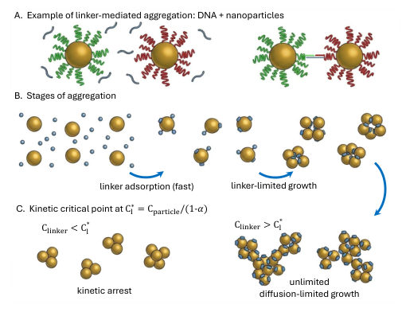
<figcaption class="paper-figure-caption"><b>Fig 1.</b> FIG. 1. Schematic of kinetic criticality in linker-mediated aggregation. (a) DNA-functionalized nanoparticles interact through soluble single-stranded DNA linkers. (b) Free link- ers first adsorb rapidly to particle surfaces, creating active patches; subsequent cluster–cluster encounters consume ac- tive linkers and block an effective surface fraction α per in- terparticle contact. (c) With particle concentration Cp and linker concentration Cl, the conservation law in Eq. (2) gives the critical concentration C∗ l = Cp/(1 −α). For Cl &lt; C∗ l , cl →0 and growth arrests at finite mass. For Cl &gt; C∗ l , active linkers remain available and aggregation crosses from linker- limited acceleration to...</figcaption>
</figure>
<figure class="paper-figure-card">
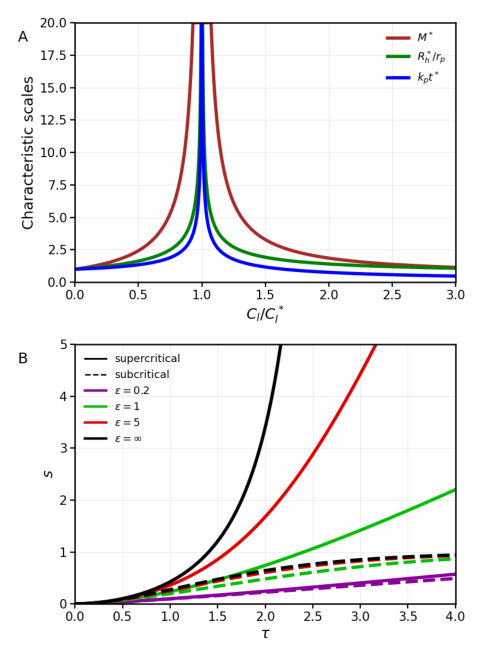
<figcaption class="paper-figure-caption"><b>Fig 2.</b> FIG. 2. Kinetic criticality in linker-mediated colloidal aggre- gation. (a) DNA-functionalized nanoparticles bind through short single-stranded DNA linkers, forming interparticle bridges. (b) Free linkers first adsorb rapidly to particle surfaces, creating active binding sites, followed by linker- mediated cluster growth. (c) Below C∗ l = Cp/(1 −α), ac- tive linkers are exhausted and growth arrests at finite cluster size; above threshold, aggregation continues and crosses over to diffusion-limited coarsening.</figcaption>
</figure>
<figure class="paper-figure-card">
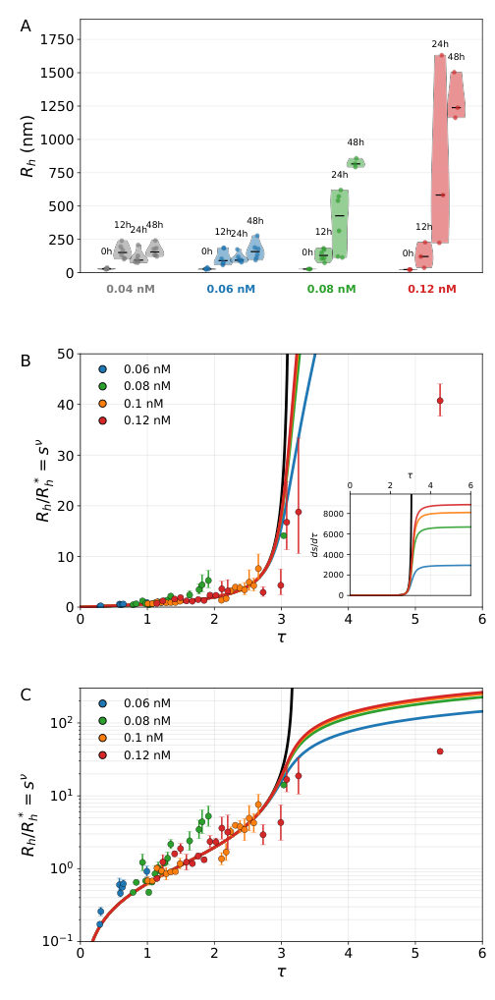
<figcaption class="paper-figure-caption"><b>Fig 3.</b> FIG. 3. DNA-linker aggregation of gold nanoparticles. (a) DLS hydrodynamic-radius distributions at fixed Cp = 0.04 nM per complementary particle type for Cl = 0.04–0.12 nM, measured at t = 0, 12, 24, and 48 h. Low-Cl samples arrest or remain near critical, whereas high-Cl samples grow. (b) Rescaled kinetics, Rh/R∗ h = sν versus τ = t/t∗, using ν = 0.55, C∗ l = 0.057 nM, and k−1 p = 16 h; the solid line is the ϵ → ∞linker-limited master curve. (c) Same data on a logarithmic scale, highlighting early acceleration and late-time deviations.</figcaption>
</figure>
</div>

<p><strong>Summary.</strong> This paper analyzes linker-mediated colloidal aggregation, showing that its kinetics are not classical but instead exhibit a sharp kinetic critical point. By controlling the linker concentration relative to this critical value, researchers can tune the system between an arrested state and one undergoing self-accelerating coarsening. This work provides a detailed model connecting chemical resource limitations to macroscopic changes in aggregation dynamics.</p>
<p><strong>Why it may be interesting.</strong> While focused on colloids, the concept of a kinetic phase transition or bifurcation in reaction rates due to resource depletion (linkers) shares conceptual parallels with non-equilibrium dynamics studied in open quantum systems or complex chemical reactions.</p>
<details>
<summary>Detailed structure</summary>
<p><strong>Main problem.</strong> The study investigates how linker-mediated colloidal aggregation deviates from classical Smoluchowski kinetics due to the dynamic evolution of cluster reactivity during growth.</p>
<p><strong>Main result.</strong> The system exhibits a kinetic critical point controlled by linker abundance, leading to two distinct regimes: arrested growth below a critical linker concentration and self-accelerating coarsening above it.</p>
<p><strong>Method.</strong> The research combines theoretical modeling using rate equations with experimental validation employing DNA-linked gold nanoparticles measured via DLS.</p>
<p><strong>Model / system.</strong> The system involves colloidal particles linked by molecules, modeled by considering the interplay between diffusion and surface reactivity. The kinetics are governed by linker conservation laws leading to a critical point separating different aggregation fates.</p>
<p><strong>Key observables.</strong> Hydrodynamic radii ($R_h$), cluster mass ($M$), and the existence/location of the kinetic critical point ($C^*_l$).</p>
<p><strong>Important parameters / regimes.</strong> Linker concentration ($C_l$), critical linker concentration ($C^*_l$), and dimensionless time ($  au$).</p>
<p><strong>Assumptions / limitations.</strong> Initial linker adsorption is assumed to be nearly irreversible, and the system is analyzed using mean-field rate equations.</p>
<p><strong>Figures summary.</strong> Figures schematically illustrate the kinetic critical point separating arrested growth (low $C_l$) from unlimited coarsening (high $C_l$), with DLS measurements confirming this separation in $R_h$ distributions over time.</p>
<p><strong>Paper structure.</strong> The paper establishes the departure from classical kinetics, derives rate equations incorporating linker depletion, identifies the critical point mathematically, and validates these theoretical predictions using colloidal experiments.</p>
</details>
<details>
<summary>Abstract</summary>
<p>Linker-mediated aggregation plays an important role in modern nanoscience. We demonstrate that it departs sharply from classical Smoluchowski kinetics because cluster reactivity evolves during growth. Combining theory with DNA-linked gold-nanoparticle experiments, we establish kinetic critical point controlled by linker abundance. Below threshold, active linkers are depleted and growth arrests; above threshold, clusters accumulate reactive sites, self-accelerate, and cross over to diffusion-limited coarsening. Experiments verify the predicted arrest, accelerated growth, and scaling collapse.</p>
</details>
<p><sub><a href="#top">↑ back to top</a></sub></p>

<p><a id="paper-2606.14855"></a></p>
<h3 id="magic-transfer-in-quantum-spin-chains"><a href="http://arxiv.org/abs/2606.14855v1">Magic transfer in quantum spin chains</a></h3>
<p><strong>Authors:</strong> Antonio Palamara, Chad Nelmes, Enrico C. Domanti, Francesco Perciavalle<br>
<strong>Type:</strong> theory · <strong>Category:</strong> other · <strong>PDF:</strong> <a href="https://arxiv.org/pdf/2606.14855v1">https://arxiv.org/pdf/2606.14855v1</a><br>
<strong>Analysis basis:</strong> full PDF text, analyzed in chunks
<strong>Topic relevance:</strong> <code>analog quantum simulation</code> <strong>3/5</strong> · <code>entanglement &amp; information structure</code> <strong>2/5</strong> · <code>non-equilibrium dynamics</code> <strong>2/5</strong> · <code>correlated / nonlocal dissipation</code> <strong>1/5</strong> · <code>driven-dissipative phase transition</code> <strong>1/5</strong> · <code>exotic spin models in light-matter</code> <strong>1/5</strong> · <code>methods for driven-dissipative</code> <strong>1/5</strong> · <code>non-equilibrium universality</code> <strong>1/5</strong></p>
<div class="figure-strip-hint">↔ Scroll figures horizontally</div>
<div class="paper-figures-scroll">
<figure class="paper-figure-card">
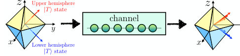
<figcaption class="paper-figure-caption"><b>Fig 1.</b> Figure 1. Pictorial representation of the protocol: |T⟩states with maximum SN are injected at one edge of a quantum channel modeled as a spin chain and transferred to the op- posite edge. The channel continuously interpolates between a perfect state transfer regime and an imperfect transfer regime. The transport of magic depends on the Bloch hemisphere to which the initial state belongs.</figcaption>
</figure>
<figure class="paper-figure-card">
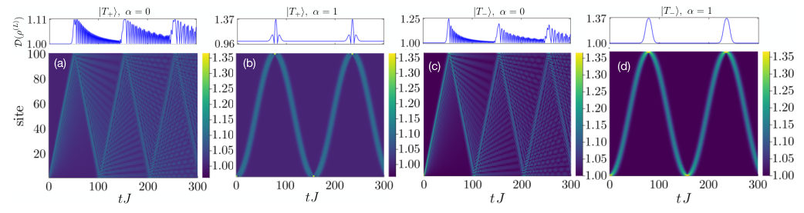
<figcaption class="paper-figure-caption"><b>Fig 2.</b> Figure 2. On-site SN dynamics (colorbar) in a spin chain described by ˆHA composed of L = 100 qubits in the two asymptotic regimes α = 0 and α = 1 when the system is initialized with |T+⟩and |T−⟩states in the site j = 1. Specifically, panel (a) |T+⟩, α = 0, panel (b) |T+⟩, α = 1, panel (c) |T−⟩, α = 0, panel (d) |T−⟩, α = 1. On the top of each panel we report the SN dynamics of the Lth site density matrix.</figcaption>
</figure>
<figure class="paper-figure-card">
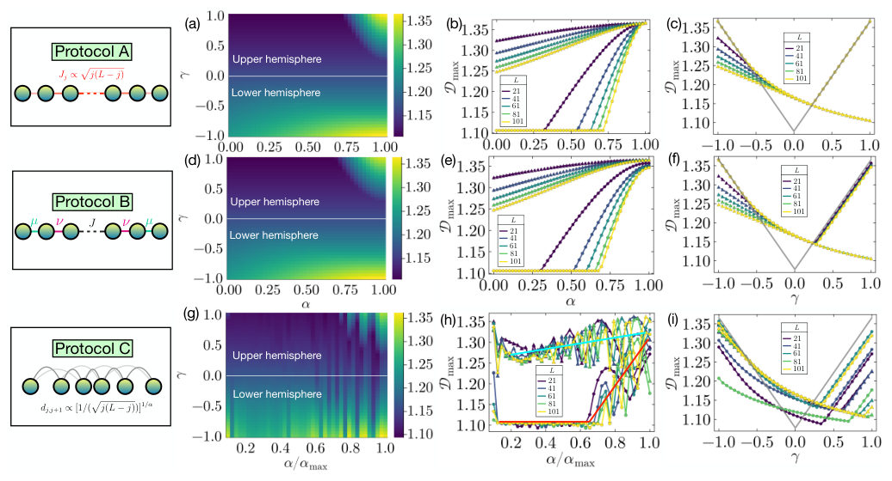
<figcaption class="paper-figure-caption"><b>Fig 3.</b> Figure 3. Maximum transferable SN in the three protocols. Panels (a)–(c) show results for protocol A (schematically illustrated on the left). Panel (a) reports the maximum transferable SN, Dmax, as a function of the Hamiltonian parameter α and the initial-state parameter γ for L = 101. Panel (b) shows Dmax versus α for different system sizes L, comparing two initial states: γ = −1 (|T−⟩, triangles) and γ = 1 (|T+⟩, circles). Panel (c) displays Dmax as a function of γ for different values of L, with triangles denoting α = 0 and circles denoting α = 1 (PST). The gray curve indicates the SN of the first site initial state. In</figcaption>
</figure>
<figure class="paper-figure-card">
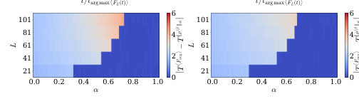
<figcaption class="paper-figure-caption"><b>Fig 4.</b> Figure 4. Maximal average fidelity over normalised time units (J−1) where the maximal fidelity occurs for α = 1 (top row). These varying L-solutions correspond to Protocol A (left col- umn) and Protocol B (right column). Bottom row corre- sponds to the difference in times between maximum SN and the maximal average fidelity on the Lth site.</figcaption>
</figure>
<figure class="paper-figure-card">

<figcaption class="paper-figure-caption"><b>Fig 5.</b> Fig. 3 in the main text shows that the time at which the average fidelity reaches its maximum generally does not coincide with the time at which the stabilizer norm</figcaption>
</figure>
</div>

<p><strong>Summary.</strong> This paper investigates the transport of quantum magic—a specific nonstabilizer resource—through spin chains using the XX Hamiltonian. By analyzing three different state-transfer protocols, the authors demonstrate that the initial state geometry dictates transfer efficiency and reveal a mechanism where the spin chain can actively amplify the injected quantum magic. This establishes a new diagnostic tool for assessing quantum channel capabilities beyond standard fidelity measures.</p>
<p><strong>Why it may be interesting.</strong> This work directly addresses non-local quantum resource transfer in physical systems like trapped ions or superconducting circuits, providing quantitative metrics (SN) beyond simple fidelity to characterize channel quality. The concept of 'magic amplification' suggests novel ways to process quantum information.</p>
<details>
<summary>Detailed structure</summary>
<p><strong>Main problem.</strong> The paper investigates the transport of quantum magic, a nonstabilizer resource, through quantum spin chains, treating it as a distinct problem from standard Perfect State Transfer (PST). It aims to characterize how this resource is preserved and amplified during state transfer.</p>
<p><strong>Main result.</strong> The geometry of the initial state significantly influences transport quality, showing an asymmetry where lower-hemisphere states transfer better than upper-hemisphere states. Furthermore, the system can act as a magic-amplification channel when the transported magic exceeds the initial encoding.</p>
<p><strong>Method.</strong> The analysis uses theoretical modeling based on the XX Hamiltonian and quantifies resource transfer using the stabilizer norm (SN) of the reduced density matrix at various sites and times.</p>
<p><strong>Model / system.</strong> The system is a one-dimensional quantum spin chain governed by an XX Hamiltonian. Three state-transfer protocols are analyzed, interpolating between homogeneous, ballistic, and power-law decaying couplings. The analysis focuses on T-states initialized in the upper or lower Bloch hemisphere.</p>
<p><strong>Key observables.</strong> Stabilizer Norm (SN) of the reduced density matrix ($  ext{D}(
ho)$), Maximum Transferable SN ($D_{   ext{max}}$), and Average Fidelity ($\langle F_j(t) 
angle$).</p>
<p><strong>Important parameters / regimes.</strong> Interpolation parameter $\alpha$ controlling coupling regimes, initial state geometry (upper vs. lower Bloch hemisphere), and system size $L$.</p>
<p><strong>Assumptions / limitations.</strong> The analysis relies on the validity of using the stabilizer norm to quantify nonstabilizerness and assumes specific forms for Hamiltonian interpolation between different transfer limits.</p>
<p><strong>Figures summary.</strong> Figures illustrate how magic transfer depends on the initial state's Bloch hemisphere, show site-dependent SN dynamics across protocols, and plot $D_{	ext{max}}$ versus Hamiltonian parameters ($\alpha$, $\gamma$).</p>
<p><strong>Paper structure.</strong> The paper establishes quantum magic transport as a resource problem, analyzes three specific spin chain protocols (A, B, C) using the XX Hamiltonian, derives the evolution of local Bloch vectors, and presents results showing state-geometry dependence and potential for magic amplification.</p>
</details>
<details>
<summary>Abstract</summary>
<p>Quantum communication protocols based on spin chains have been extensively studied, yet their ability to transmit nonstabilizer resources has not been systematically addressed. We investigate the transport of quantum magic in spin chains through the natural dynamics of systems initialized in nonstabilizer states, and quantify the transported resource via the stabilizer norm. We analyze three experimentally feasible state-transfer protocols, ranging from noisy to (quasi-)perfect transfer, including one realizable in trapped-ion platforms. We find that the geometry of the injected state strongly influences transport: states in the lower Bloch hemisphere achieve higher transfer quality, whereas states in the upper hemisphere give rise to an efficient magic transport only beyond a threshold value of the parameter controlling the tendency towards perfect transfer. These features are robust across all protocols and identify the Hamiltonian and state properties that favor high-quality transfer. Moreover, we identify a parameter region, relevant to the initial state preparation, in which the transported magic exceeds the initial encoding, indicating that such spin systems can act as magic-amplification channels. Our results establish the conditions for efficient transport of nonstabilizer resources and demonstrate quantum magic as a sensitive probe of quantum transport beyond population dynamics.</p>
</details>
<p><sub><a href="#top">↑ back to top</a></sub></p>

<p><a id="paper-2606.15071"></a></p>
<h3 id="quantum-learning-with-a-single-atom-sensor"><a href="http://arxiv.org/abs/2606.15071v1">Quantum learning with a single-atom sensor</a></h3>
<p><strong>Authors:</strong> Yin Mo, Emilio Bagan, Giulio Chiribella<br>
<strong>Type:</strong> theory · <strong>Category:</strong> quantum information and computing · <strong>PDF:</strong> <a href="https://arxiv.org/pdf/2606.15071v1">https://arxiv.org/pdf/2606.15071v1</a><br>
<strong>Analysis basis:</strong> full PDF text, analyzed in chunks
<strong>Topic relevance:</strong> <code>entanglement &amp; information structure</code> <strong>3/5</strong> · <code>quantum measurements</code> <strong>3/5</strong> · <code>measurement-induced transitions</code> <strong>2/5</strong> · <code>Keldysh / 2PI / non-Gaussian methods</code> <strong>1/5</strong> · <code>correlated / nonlocal dissipation</code> <strong>1/5</strong> · <code>driven-dissipative phase transition</code> <strong>1/5</strong> · <code>methods for driven-dissipative</code> <strong>1/5</strong></p>
<div class="figure-strip-hint">↔ Scroll figures horizontally</div>
<div class="paper-figures-scroll">
<figure class="paper-figure-card">
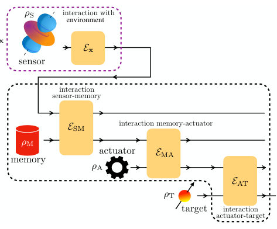
<figcaption class="paper-figure-caption"><b>Fig 1.</b> FIG. 2: Learning from a quantum sensor. A sensor S, initially in the state ρS, interacts with the environment, gathering in- formation about a set of parameters x. After the interaction, the sensor ends up in the state ρx. It then transfers infor- mation to the internal memory M of the learning machine, initially in the state ρM. When the machine is required to operate, it accesses its memory by letting it interact with a quantum system A, called the actuator, which controls the machine’s operations on a target system T. The overall pro- cess converting sensorial data into actions on the target sys- tem is described by an effective channel C, with input ST and output T.</figcaption>
</figure>
<figure class="paper-figure-card">
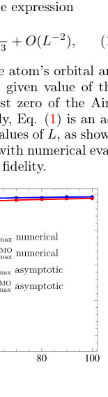
<figcaption class="paper-figure-caption"><b>Fig 2.</b> FIG. 1: Ultimate quantum limit for learning rotations from a single atom. The figure shows the fidelity between the output produced by the learning machine and the output of the given rotation, for the optimal quantum learning machine (blue) and the optimal machine based on estimation (red). The solid curves represent the asymptotic expressions (1) (blue) and (2) (red), respectively, while dots are the results of numerical optimization.</figcaption>
</figure>
<figure class="paper-figure-card">
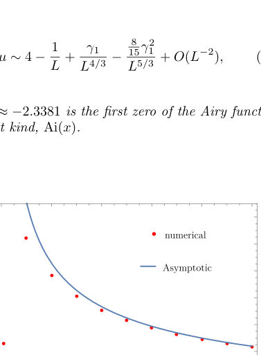
<figcaption class="paper-figure-caption"><b>Fig 3.</b> FIG. 1: Plot of the function L(4 −µ) vs L for L up to 100. The solid line is derived from the asymptotic expression in Eq. (17), i.e., L(4−µ) = 1−γ1L−1/3+(8/15)γ2 1L−2/3, whereas the red circles are obtained by numerical calculation. The plot illustrates the validity of Eq. (17) even for relatively small values of L.</figcaption>
</figure>
<figure class="paper-figure-card">

<figcaption class="paper-figure-caption"><b>Fig 4.</b> Fig 1 illustrates the accuracy of the asymptotic expres- sion provided by Theorem 3 by comparing the subleading terms in Eq. (17) to the exact values of L(4−µ) obtained through numerical calculation of the largest eigenvalue. The agreement between the asymptotic formula and the numerical results is remarkable. The asymptotic expres- sion accurately predicting L(4−µ) for values of the total angular momentum as small as L ⪆10, despite of the fact that this comparison accentuates the differences between the two curves. Applying Theorem 3, we can directly conclude that, up to order 1/L2, the asymptotic fidelity is given by Eq. (1) in the main text. This result provides a concise and accu- rate...</figcaption>
</figure>
</div>

<p><strong>Summary.</strong> This work establishes fundamental quantum limits for learning processes where information is gathered by a single-atom sensor. It reveals a critical tradeoff: optimal performance requires either pre-existing entanglement between the sensor and memory, or an efficient coherent transfer of quantum information during operation. The findings link quantum sensing directly to the capabilities of quantum agents.</p>
<p><strong>Why it may be interesting.</strong> It provides rigorous theoretical benchmarks for quantum sensing protocols, quantifying exactly how initial entanglement resources can enhance computational tasks beyond classical or simple estimation limits.</p>
<details>
<summary>Detailed structure</summary>
<p><strong>Main problem.</strong> The paper investigates the ultimate quantum limits for a learning agent's ability to sense external inputs (via a single-atom sensor) and translate that information into actions (rotating a target spin). It specifically determines the fundamental tradeoff between entanglement at sensing and coherence at action.</p>
<p><strong>Main result.</strong> The optimal quantum strategy surpasses both estimation-based methods and measurement-and-operate strategies, demonstrating that initial entanglement between the sensor and memory is crucial for achieving the best performance bound.</p>
<p><strong>Method.</strong> The analysis uses fully quantum models of learning machines, deriving upper bounds on fidelity using techniques involving Choi operators, spectral theory of tridiagonal matrices, and asymptotic analysis (e.g., solving differential equations).</p>
<p><strong>Model / system.</strong> The model involves a single-atom sensor interacting with an environment parameterizing the input ($x$), which then transfers information to an internal quantum memory controlling an actuator acting on a target spin qubit.</p>
<p><strong>Key observables.</strong> Fidelity ($F$ or $F^{(e)}$), entanglement fidelity, and the largest eigenvalue ($\mu$) of associated tridiagonal matrices.</p>
<p><strong>Important parameters / regimes.</strong> The size parameter $L$ (related to sensor basis size) and the initial entanglement structure between the sensor and memory.</p>
<p><strong>Assumptions / limitations.</strong> The analysis compares optimal quantum strategies against measure-and-operate protocols, assuming that the optimal channels can be taken as unitary in certain limits.</p>
<p><strong>Figures summary.</strong> Figures compare the ultimate quantum limit fidelity versus estimation-based machine fidelity; one figure illustrates the overall process flow from Sensor $    o$ Environment $    o$ Memory $ o$ Actuator to the Target System.</p>
<p><strong>Paper structure.</strong> The paper builds by first establishing the general framework, then deriving bounds for specific strategies (optimal vs. measure-and-operate), and finally using advanced mathematical techniques like solving differential equations and asymptotic expansions to determine the ultimate scaling laws for fidelity.</p>
</details>
<details>
<summary>Abstract</summary>
<p>The ability to gather information and to act upon it is at the core of every learning agent. But what is the impact of quantum mechanics on an agent's ability to sense external inputs and to translate them into actions? Here we address the question for a prototype task of learning agency at the quantum scale: rotating a single spin based on information gathered by a single atom. We determine the ultimate performance limit for this task, revealing a fundamental tradeoff between entanglement at the sensing stage and coherence at the action stage: if the single-atom sensor is not entangled with the quantum system serving as the agent's internal memory, then the best learning strategy requires a coherent transfer of quantum information from the sensor to the system that controls the agent's actions. In contrast, if the sensor is initially entangled with the agent's memory, then the transfer of quantum information is no longer necessary. Our results indicate that the quantum properties of the sensor radically affect the optimal way to convert external stimuli into actions, revealing a link between quantum sensing and the behavior of quantum agents.</p>
</details>
<p><sub><a href="#top">↑ back to top</a></sub></p>

<p><a id="paper-2606.16752"></a></p>
<h3 id="refining-unified-colored-noise-approximation"><a href="http://arxiv.org/abs/2606.16752v1">Refining Unified Colored-Noise Approximation</a></h3>
<p><strong>Authors:</strong> Alessandro Corso, Daniel M. Busiello<br>
<strong>Type:</strong> theory · <strong>Category:</strong> statistical mechanics · <strong>PDF:</strong> <a href="https://arxiv.org/pdf/2606.16752v1">https://arxiv.org/pdf/2606.16752v1</a><br>
<strong>Analysis basis:</strong> full PDF text, analyzed in chunks
<strong>Topic relevance:</strong> <code>Keldysh / 2PI / non-Gaussian methods</code> <strong>3/5</strong> · <code>methods for driven-dissipative</code> <strong>3/5</strong> · <code>correlated / nonlocal dissipation</code> <strong>2/5</strong> · <code>non-equilibrium dynamics</code> <strong>2/5</strong> · <code>driven-dissipative phase transition</code> <strong>1/5</strong> · <code>non-equilibrium universality</code> <strong>1/5</strong></p>
<div class="figure-strip-hint">↔ Scroll figures horizontally</div>
<div class="paper-figures-scroll">
<figure class="paper-figure-card">
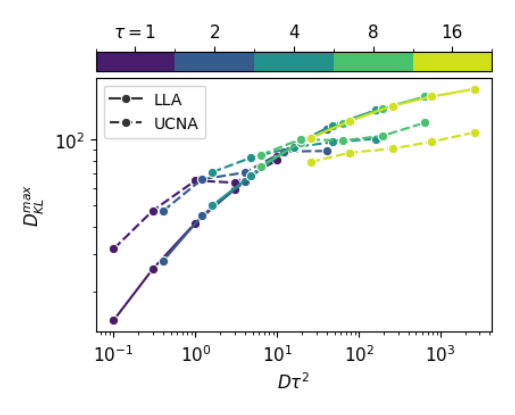
<figcaption class="paper-figure-caption"><b>Fig 1.</b> FIG. 1. Performance of UCNA and LLA for the quartic poten- tial in Eq. (17) in the transient regime. The maximum value attained by the Kullback-Leibler divergence between numer- ical and approximate solutions during the dynamics is used as performance parameter. While the LLA performs better for small Dτ 2, we observe a crossover at large values of Dτ 2</figcaption>
</figure>
<figure class="paper-figure-card">
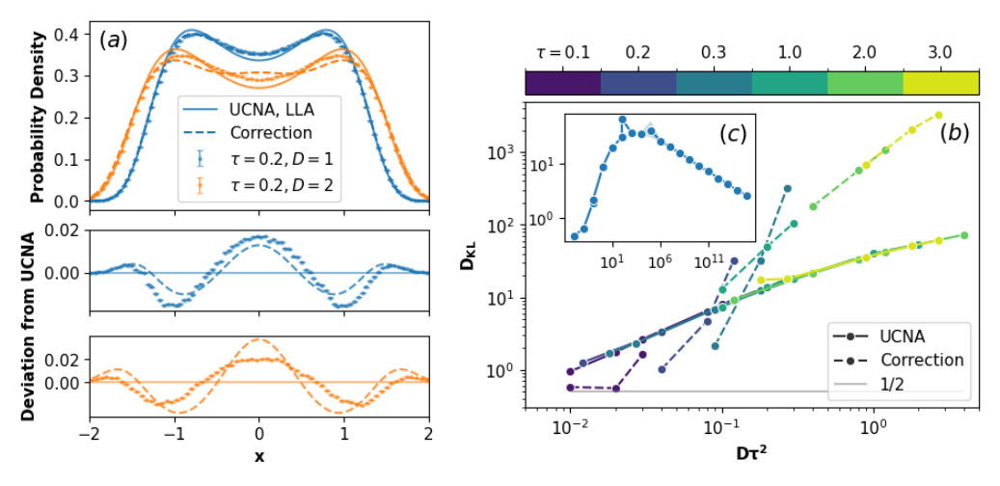
<figcaption class="paper-figure-caption"><b>Fig 2.</b> FIG. 2. Performance of the theory for the quartic potential in Eq. (17). (a) Stationary probability distribution in the UCNA approximation and its correction, compared with simulations of the exact stochastic differential equation. Lower panels show the difference between the two approximations. (b) Kullback-Leibler divergence, DKL, in Eq. (18) between numerical solution and approximate theoretical results. The inset (c) shows the behavior of the DKL for large values of Dτ 2.</figcaption>
</figure>
<figure class="paper-figure-card">
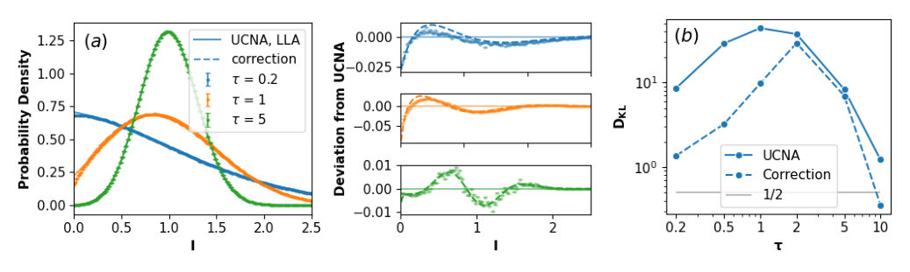
<figcaption class="paper-figure-caption"><b>Fig 3.</b> FIG. 3. Performance of the theory for the stochastic logistic model at critical noise intensity D = 2 for which the steady-state distribution stays finite at I = 0 (see also [17]). (a) Stationary probability distribution in the UCNA approximation and its correction, compared with simulations of the exact stochastic differential equation. Side panels show the difference between the two approximations. (b) Kullback-Leibler divergence, DKL, between numerical and approximate solution as a function of τ.</figcaption>
</figure>
</div>

<p><strong>Summary.</strong> This paper refines the Unified Colored-Noise Approximation (UCNA) by developing a rigorous time-scale separation procedure. It derives next-to-leading order corrections to the dynamics for systems driven by colored noise. This improves theoretical accuracy over standard methods, providing better predictions for physical observables like stationary distributions.</p>
<p><strong>Why it may be interesting.</strong> This work provides a systematic, higher-order theoretical tool for analyzing open quantum systems or classical stochastic processes where noise correlations are non-Markovian, which is crucial when simple approximations fail.</p>
<details>
<summary>Detailed structure</summary>
<p><strong>Main problem.</strong> The paper addresses the challenge of accurately modeling stochastic dynamics driven by colored noise, which possesses non-trivial temporal correlations.</p>
<p><strong>Main result.</strong> By refining the Unified Colored-Noise Approximation (UCNA) using a time-scale separation procedure, the authors derive next-to-leading order corrections to the system's evolution equations and stationary distributions.</p>
<p><strong>Method.</strong> The core method involves applying a systematic time-scale separation technique to an equivalent two-variable system, allowing for a perturbative expansion in a small parameter $\epsilon$.</p>
<p><strong>Model / system.</strong> The analysis is applied to general stochastic differential equations (Langevin equations) driven by colored noise, exemplified by a particle in a quartic potential and stochastic logistic growth.</p>
<p><strong>Key observables.</strong> Stationary probability distributions ($\hat{p}_{st}$), the Kullback-Leibler divergence ($ ext{DKL}$) used to quantify approximation accuracy.</p>
<p><strong>Important parameters / regimes.</strong> The correlation time ($ au$), diffusion coefficient ($D$), and the small expansion parameter $\epsilon$ are crucial parameters governing the approximations' validity.</p>
<p><strong>Assumptions / limitations.</strong> The primary assumptions are the applicability of a time-scale separation procedure and performing an expansion in the small parameter $\epsilon$.</p>
<p><strong>Figures summary.</strong> Figures compare the performance (via DKL) of the standard UCNA versus the newly derived corrected approximation for both transient and stationary regimes across two physical examples.</p>
<p><strong>Paper structure.</strong> The paper first establishes the mathematical shortcomings of the original UCNA. It then rigorously derives the next-to-leading order correction using time-scale separation, presenting the corrected evolution equation. Finally, it applies this framework to specific models (quartic potential and logistic growth) to derive and compare the improved stationary solutions.</p>
</details>
<details>
<summary>Abstract</summary>
<p>Countless biological and physical systems experience fluctuations that exhibit non-trivial temporal correlations. The Unified Colored-Noise Approximation (UCNA) is a framework providing an approximate description of such stochastic dynamics with colored noise, valid in the limits of vanishing and infinite correlation time of the noise. We first pinpoint and address some criticalities in its original derivation, recasting the result through a time-scale separation procedure. By using our approach, we derive the next-to-leading order correction to the dynamics in both limiting regimes, and highlight the relevant physical scalings of these approximations. Our result helps frame the limits of validity of both the original and the refined formulas, especially in comparison with those derived through different approximation procedures. We show our findings in two paradigmatic examples, a quartic potential and a stochastic logistic growth with multiplicative noise.</p>
</details>
<p><sub><a href="#top">↑ back to top</a></sub></p>

<p><a id="paper-2606.16875"></a></p>
<h3 id="spin-orbit-entangled-math823math-magnetism-and-unconventional-spin-freezing-in-the-bond-disordered-pyrochlore-antiferromagnet-nacdcomath824mathfmath825math"><a href="http://arxiv.org/abs/2606.16875v1">Spin-orbit-entangled $J_{\rm eff}=\frac{1}{2}$ magnetism and unconventional spin freezing in the bond-disordered pyrochlore antiferromagnet NaCdCo$_2$F$_7$</a></h3>
<p><strong>Authors:</strong> Andrej Kancko, Hironori Sakai, Javier Herrero-Martín, Adam Berlie, Marc Uhlarz, Tetiana Haidamak, Yo Tokunaga, Ross H. Colman<br>
<strong>Type:</strong> both · <strong>Category:</strong> disordered systems and neural networks · <strong>PDF:</strong> <a href="https://arxiv.org/pdf/2606.16875v1">https://arxiv.org/pdf/2606.16875v1</a><br>
<strong>Analysis basis:</strong> full PDF text, analyzed in chunks
<strong>Topic relevance:</strong> <code>analog quantum simulation</code> <strong>3/5</strong> · <code>exotic spin models in light-matter</code> <strong>3/5</strong> · <code>spintronics-quantum-optics interface</code> <strong>3/5</strong> · <code>Kondo &amp; dissipative impurity</code> <strong>1/5</strong> · <code>methods for driven-dissipative</code> <strong>1/5</strong> · <code>non-equilibrium dynamics</code> <strong>1/5</strong></p>
<div class="figure-strip-hint">↔ Scroll figures horizontally</div>
<div class="paper-figures-scroll">
<figure class="paper-figure-card">
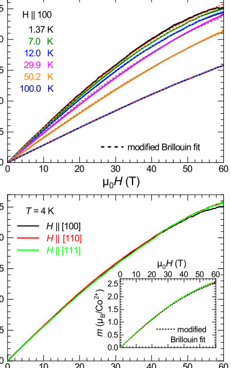
<figcaption class="paper-figure-caption"><b>Fig 1.</b> Figure 1. (a) Temperature dependence of pulsed-field magne- tization of an oriented crystal of NaCdCo2F7, with H ∥[100]. Fits to Eq. (1) are shown as dashed lines. (b) Directional dependence of magnetization at T = 4 K, with field applied along [100], [110] and [111] directions. Fits to Eq. (1) are shown separately in the inset.</figcaption>
</figure>
<figure class="paper-figure-card">
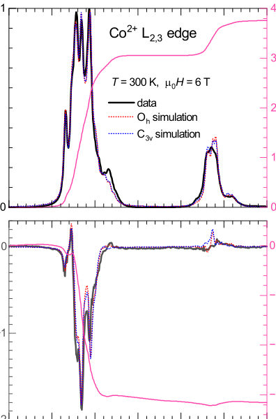
<figcaption class="paper-figure-caption"><b>Fig 2.</b> Figure 2. (a) Co2+ L2,3 XAS and (b) XMCD data mea- sured at T = 300 K in 6 T field, both normalized to the maximum L3 intensity, shown together with Oh and C3v crystal-field simulations from Crispy. The integration curves of XAS/XMCD are shown on the right axes.</figcaption>
</figure>
<figure class="paper-figure-card">
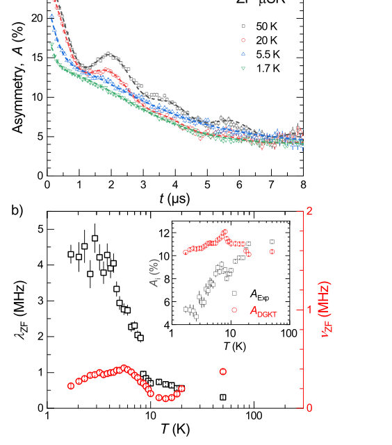
<figcaption class="paper-figure-caption"><b>Fig 3.</b> Figure 3. (a) Temperature dependence of ZF muon asym- metry. (b) Temperature dependence of fitted ZF muon relax- ation rate λZF and fluctuation rate νZF from Equation 7, with fitted relaxing amplitudes shown in the inset.</figcaption>
</figure>
<figure class="paper-figure-card">
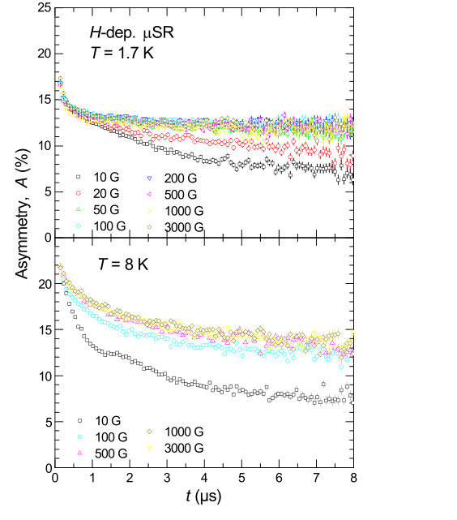
<figcaption class="paper-figure-caption"><b>Fig 4.</b> Figure 4. Field dependence of muon asymmetry at T = 1.7 K (upper panel) and T = 8 K (lower panel).</figcaption>
</figure>
<figure class="paper-figure-card">
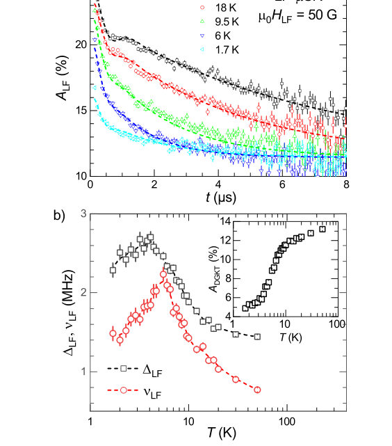
<figcaption class="paper-figure-caption"><b>Fig 5.</b> Figure 5. (a) Temperature dependence of LF 50 G muon asymmetry. (b) Temperature dependence of fitted quasistatic field distribution ∆LF and fluctuation rate νLF from Equation 8, with the relaxing amplitude T -dependence shown in the inset.</figcaption>
</figure>
</div>

<p><strong>Summary.</strong> The research characterizes the magnetism of a bond-disordered pyrochlore antiferromagnet using multiple advanced probes. It establishes that strong spin-orbit coupling dictates the formation of $J_{	ext{eff}}=1/2$ moments, leading to an unconventional, partially frozen glassy state upon cooling. This finding highlights SOC as the crucial ingredient differentiating its magnetic fate from related, simpler systems.</p>
<p><strong>Why it may be interesting.</strong> This work is interesting because it uses advanced spectroscopic techniques ($\mu$SR, XMCD) to map out complex many-body quantum states in disordered magnetic insulators, providing insights into how crystal field effects (SOC) stabilize exotic glassy phases over simpler theoretical models.</p>
<details>
<summary>Detailed structure</summary>
<p><strong>Main problem.</strong> The study investigates how bond disorder influences the magnetic ground state of frustrated pyrochlore antiferromagnets, specifically comparing spin-orbit-entangled Co$^{2+}$ moments to simpler $S=1/2$ counterparts.</p>
<p><strong>Main result.</strong> The system realizes an unconventional, partially frozen spin-glass-like state with persistent low-temperature dynamics, fundamentally different from a canonical spin glass or random-singlet state.</p>
<p><strong>Method.</strong> A combination of experimental techniques including high-field magnetization, XAS/XMCD (to probe orbital moments), $\mu$SR (for local field dynamics), and $^{23}$Na NMR (for spin relaxation) was employed.</p>
<p><strong>Model / system.</strong> The physical system is the bond-disordered pyrochlore antiferromagnet NaCdCo$_2$F$_7$, which hosts localized $J_{	ext{eff}}=1/2$ Kramers doublets due to strong spin-orbit coupling. The analysis compares its behavior against isostructural compounds like NaCdCu$_2$F$_7$.</p>
<p><strong>Key observables.</strong> Magnetization curves $M(H, T)$, $\mu$SR relaxation rates ($\lambda_{	ext{ZF}}$), $^{23}$Na NMR spin-lattice relaxation rate ($1/T_1$), and orbital moment ratios ($\langle L_z 
angle / \langle S_{	ext{eff}} 
angle$).</p>
<p><strong>Important parameters / regimes.</strong> The key physical parameters are the strength of spin-orbit coupling (SOC) and the degree of bond disorder, which dictate whether the system enters a glassy or random-singlet state.</p>
<p><strong>Assumptions / limitations.</strong> The analysis assumes that SOC is the dominant mechanism governing the magnetic response in these frustrated lattices, leading to $J_{	ext{eff}}=1/2$ moments.</p>
<p><strong>Figures summary.</strong> Figures illustrate temperature dependence of magnetization under high fields and directional dependence at low temperatures. $\mu$SR and NMR data show characteristic signatures of progressive spin fluctuation slowing down below $\sim 10 	ext{ K}$.</p>
<p><strong>Paper structure.</strong> The paper builds by first characterizing the magnetic moments using XAS/XMCD, then probing the bulk dynamics via magnetization measurements, and finally detailing the low-temperature freezing behavior using highly sensitive local probes like $\mu$SR and NMR.</p>
</details>
<details>
<summary>Abstract</summary>
<p>Bond disorder in frustrated pyrochlore antiferromagnets can give rise to fundamentally different quantum ground states depending on the nature of the local magnetic moments. Here, we show that the bond-disordered pyrochlore NaCdCo$_2$F$_7$ realizes an unconventional spin-glass-like state with continued dynamics, in stark contrast to its isostructural $S=\frac{1}{2}$ NaCdCu$_2$F$_7$ counterpart. High-field magnetization and Co $L_{2,3}$-edge XAS/XMCD establish spin-orbit-entangled $J_{\rm eff}=\frac{1}{2}$ Co$^{2+}$ moments with a substantial unquenched orbital contribution, consistent with local $XY$ anisotropy seen in the isostructural Na$A''$Co$_2$F$_7$ ($A''$ = Ca, Sr) analogues. $μ$SR and $^{23}$Na NMR measurements reveal progressive slowing of spin fluctuations below $\sim10$ K, culminating in a partially frozen state with persistent low-temperature dynamics that deviates from a canonical spin glass. Comparison with the isostructural bond-disordered pyrochlore NaCdCu$_2$F$_7$, which realizes a random-singlet state, reveals a fundamentally different response of spin-orbit-entangled Co$^{2+}$ moments to bond disorder. These results identify spin-orbit coupling as a key ingredient governing the fate of bond-disordered frustrated pyrochlore magnets.</p>
</details>
<p><sub><a href="#top">↑ back to top</a></sub></p>

<p><a id="paper-2606.15588"></a></p>
<h3 id="topological-tricritical-ising-universality-class-in-one-dimension"><a href="http://arxiv.org/abs/2606.15588v1">Topological Tricritical Ising Universality Class in One Dimension</a></h3>
<p><strong>Authors:</strong> Sheng Yang, Hai-Qing Lin, Xue-Jia Yu<br>
<strong>Type:</strong> theory · <strong>Category:</strong> statistical mechanics · <strong>PDF:</strong> <a href="https://arxiv.org/pdf/2606.15588v1">https://arxiv.org/pdf/2606.15588v1</a><br>
<strong>Analysis basis:</strong> full PDF text, analyzed in chunks
<strong>Topic relevance:</strong> <code>Keldysh / 2PI / non-Gaussian methods</code> <strong>3/5</strong> · <code>methods for driven-dissipative</code> <strong>2/5</strong> · <code>non-equilibrium universality</code> <strong>2/5</strong> · <code>analog quantum simulation</code> <strong>1/5</strong> · <code>driven-dissipative phase transition</code> <strong>1/5</strong> · <code>entanglement &amp; information structure</code> <strong>1/5</strong> · <code>exotic spin models in light-matter</code> <strong>1/5</strong> · <code>non-equilibrium dynamics</code> <strong>1/5</strong></p>
<div class="figure-strip-hint">↔ Scroll figures horizontally</div>
<div class="paper-figures-scroll">
<figure class="paper-figure-card">
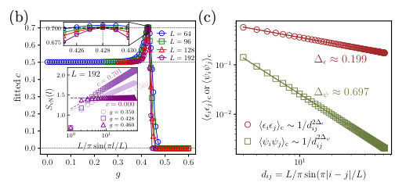
<figcaption class="paper-figure-caption"><b>Fig 1.</b> FIG. 1. (a) Ground-state phase diagram tuned by the param- eter g. The system resides in the Ising* (TCI∗) universality class with central charge c = 0.5 (c = 0.7) for 0 ≤g &lt; gc (gc ≈0.428) and enters a gapped phase when g &gt; gc . (b) Extracted central charge c as a function of g for various sizes L. Upper inset: finite-size effect near the TCI∗QCP, demonstrating the convergence to c = 0.7 at gc = 0.428 as L increases. Lower inset: the bipartite von Neumann en- tanglement entropy SvN(l) versus the conformal chord length for three representative points: g = 0.350 (on the Ising* line), g = gc (at the TCI∗QCP), and g = 0.460 (on the gapped line). (c) Algebraic decay of the connected correlation...</figcaption>
</figure>
<figure class="paper-figure-card">
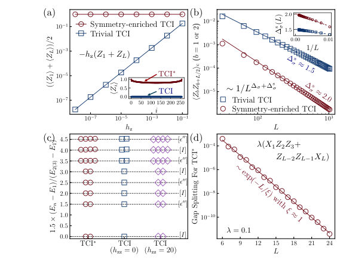
<figcaption class="paper-figure-caption"><b>Fig 2.</b> FIG. 2. (a) Boundary magnetization versus hz [with Hbdy = −hz(Z1 + ZL)] for the original and cluster OF models. Inset: the spatial profile of the magnetization across the chain under a vanishingly small hz = 10−8 for L = 256. (b) Finite-size scaling of the boundary-bulk connected spin-spin correlation function, which scales as ∼L−(∆σ+∆s σ). Here we have chosen r = L/2 for finite-size systems of size L. Taking the known bulk scaling dimension ∆σ = 3/40, we extract ∆s σ ≈1.5 (∆s σ ≈2.0) for the original (cluster) OF model. Inset: the finite-size exponent ∆s σ obtained via power-law fits using data from system sizes L, L ± 32, and L ± 64. (c) Rescaled low- energy spectra of the cluster OF and...</figcaption>
</figure>
<figure class="paper-figure-card">
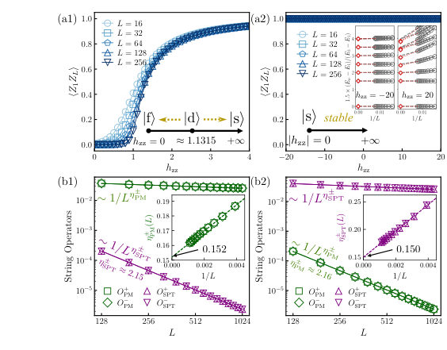
<figcaption class="paper-figure-caption"><b>Fig 3.</b> FIG. 3. (a1), (a2) Boundary spin-spin correlation ⟨Z1ZL⟩as a function of hzz, with Hbdy = −hzz(Z1Z2 + ZL−1ZL), for the (a1) original and (a2) cluster OF models at the tricritical Ising point. The insets show the corresponding boundary RG flows among the free |f⟩, degenerate |d⟩, and spontaneously fixed |s⟩boundary fixed points, with dotted arrows indicat- ing the flow directions. The spectral inset in (a2) shows the rescaled spectrum 1.5(En−E1)/(E3−E1) at hzz = ±20, which matches the BCFT operator content of |s⟩. Red dashed lines show finite-size extrapolations, while red diamonds indicate the extrapolated thermodynamic-limit values; gray dashed lines mark the corresponding scaling...</figcaption>
</figure>
</div>

<p><strong>Summary.</strong> This work explores novel quantum critical points by studying the cluster O’Brien–Fendley model. The authors establish a distinct $ ext{TCI}^*$ universality class characterized by unique boundary physics and an exponential energy splitting of its topological edge modes. This research advances the understanding of how topology enriches criticality in low-dimensional quantum systems.</p>
<p><strong>Why it may be interesting.</strong> It provides a rigorous theoretical framework for identifying symmetry-enriched topological phases beyond standard critical theories, which is highly relevant to modern condensed matter theory.</p>
<details>
<summary>Detailed structure</summary>
<p><strong>Main problem.</strong> To investigate whether a topologically distinct Tricritical Ising (TCI) universality class ($ ext{TCI}^*$) exists beyond the ordinary TCI criticality, particularly concerning topological aspects at quantum critical points.</p>
<p><strong>Main result.</strong> The $  ext{TCI}^*$ QCP exhibits a twofold topological degeneracy with an exponential energy splitting, distinguishing it from the ordinary TCI point and revealing distinct boundary structures.</p>
<p><strong>Method.</strong> The study employs field-theoretic analysis, large-scale numerical simulations (DMRG), and Conformal Boundary Field Theory (BCFT) techniques to analyze critical exponents and low-energy spectra.</p>
<p><strong>Model / system.</strong> The system is based on the cluster O’Brien–Fendley (OF) model, a spin-1/2 chain with multiple three-body interactions, analyzed near its tricritical point ($g_c \approx 0.428$).</p>
<p><strong>Key observables.</strong> Central charge ($c$), boundary magnetization ($m_{bdy}$), boundary correlation exponent ($\Delta_{s\sigma}$), and the energy splitting ($\Delta E$) of edge modes.</p>
<p><strong>Important parameters / regimes.</strong> Tuning parameter $g$, critical coupling constants, and system size $L$.</p>
<p><strong>Assumptions / limitations.</strong> The analysis relies on mapping the low-energy physics to established CFT/BCFT frameworks for comparison.</p>
<p><strong>Figures summary.</strong> Figures illustrate finite-size scaling of correlation functions ($\Delta_{s\sigma}$), comparisons of low-energy spectra under different boundary conditions, and plots showing exponential decay of energy splitting at $ ext{TCI}^*$.</p>
<p><strong>Paper structure.</strong> The paper systematically compares the critical behavior of the cluster OF model to ordinary TCI theory by analyzing boundary correlation functions, confirming distinct scaling dimensions ($\Delta_{s\sigma}$), and demonstrating the unique exponential energy splitting characteristic of the $    ext{TCI}^*$ point.</p>
</details>
<details>
<summary>Abstract</summary>
<p>Recent advances have revealed that quantum critical universality can be enriched by nontrivial topology. Here we study the tricritical point of the one-dimensional cluster O Brien-Fendley model and show that it realizes a topologically nontrivial tricritical Ising ($\text{TCI}^*$) universality class. The transition shares the local bulk conformal data of ordinary TCI criticality, while realizing a distinct symmetry-enriched topological sector, manifested through a protected twofold degeneracy under open boundary conditions. We further show that TCI criticality admits two spontaneously fixed boundary conditions, realized respectively through symmetry enrichment and boundary renormalization-group flow, which are distinguished by the $\mathbb{Z}_2^T$ charge of the disorder field. Remarkably, we find that the topological twofold degeneracy at the $\text{TCI}^*$ critical point exhibits an exponential energy splitting, in stark contrast to the algebraic splitting at the $\text{Ising}^*$ critical point. These results reveal a symmetry-enriched form of TCI criticality and uncover topologically distinct boundary structures beyond those of the ordinary TCI theory.</p>
</details>
<p><sub><a href="#top">↑ back to top</a></sub></p>

<p><a id="paper-2606.17026"></a></p>
<h3 id="bath-memory-as-a-precision-resource-in-quantum-transport"><a href="http://arxiv.org/abs/2606.17026v1">Bath memory as a precision resource in quantum transport</a></h3>
<p><strong>Authors:</strong> José Molina, Sheikh Parvez Mandal, Mahasweta Pandit, Javier Prior<br>
<strong>Type:</strong> theory · <strong>Category:</strong> statistical mechanics · <strong>PDF:</strong> <a href="https://arxiv.org/pdf/2606.17026v1">https://arxiv.org/pdf/2606.17026v1</a><br>
<strong>Analysis basis:</strong> full PDF text, analyzed in chunks
<strong>Topic relevance:</strong> <code>Keldysh / 2PI / non-Gaussian methods</code> <strong>3/5</strong> · <code>Kondo &amp; dissipative impurity</code> <strong>2/5</strong> · <code>non-equilibrium dynamics</code> <strong>2/5</strong> · <code>correlated / nonlocal dissipation</code> <strong>1/5</strong> · <code>driven-dissipative phase transition</code> <strong>1/5</strong> · <code>methods for driven-dissipative</code> <strong>1/5</strong> · <code>non-equilibrium universality</code> <strong>1/5</strong></p>
<div class="figure-strip-hint">↔ Scroll figures horizontally</div>
<div class="paper-figures-scroll">
<figure class="paper-figure-card">
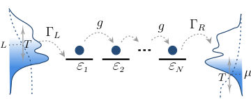
<figcaption class="paper-figure-caption"><b>Fig 1.</b> Figure 1: Schematic representation of the quantum trans- port setup.</figcaption>
</figure>
<figure class="paper-figure-card">
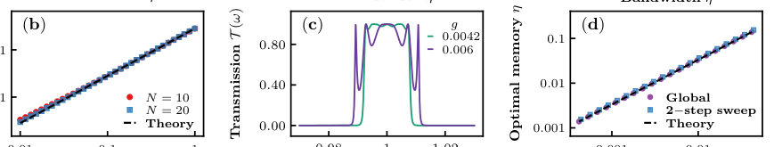
<figcaption class="paper-figure-caption"><b>Fig 2.</b> Figure 2: (a1) Current Fano factor F, calculated using the NEGF technique in the pseudomode representation of the Lorentzian baths, as a function of bath bandwidth η for different hoppings g with Fano minima marked for g = 0.01 and g = 0.0042. (a2, a3) Pole frequencies Ωj and damping rates γj/2 (color scale, right top) of the modes in Eq. (6) for mismatched (g = 0.01) and optimal g = 0.0042 internal hoppings as a function of bandwidth η. The circles represent the pole positions at the numerical optimal η. Insets show the inter-mode overlap matrix [Eq. (6)] (color scale, right bottom). The optimal case (g = 0.0042) displays strong uniform overlap, enabling constructive interference and noise...</figcaption>
</figure>
<figure class="paper-figure-card">
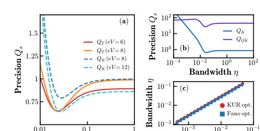
<figcaption class="paper-figure-caption"><b>Fig 3.</b> Figure 3: Thermodynamic and kinetic precision enhance- ment using bath memory. (a) Simultaneous reduction of TUR and KUR coefficients for different values of bias. (b) Semiclassical KUR and quantum kinetic coefficients as functions of reservoir bandwidth for eV/T = 8. (c) Global minima of semiclassical KUR and Fano factor in the (g, η) plane for Γ ∈[0.001, 0.1]. Parameters: Γα = 0.01, T = 1, εLα = ε = 1, N = 2.</figcaption>
</figure>
<figure class="paper-figure-card">
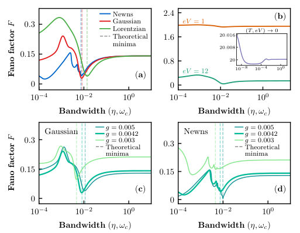
<figcaption class="paper-figure-caption"><b>Fig 4.</b> Figure 4: Fano factor F vs effective bandwidth η (Lorentzian) and ωc (Gaussian and Newns). Vertical dashed lines indicates the theoretically predicted minima [Eq. (9)]. (a) F for different bath spectra for g = 0.005. (b) F for different values of bias eV ; the inset shows the linear response behavior for T = 10−3, eV = 10−4. The Fano factor F with respect to bandwidth is shown for different g’s for a Gaussian (c) and a Newns (d) bath spectral density. Parameters: N = 10, Γα = 0.01, T = 1, eV/T = 12, and εLα = ε = 1, unless otherwise stated.</figcaption>
</figure>
<figure class="paper-figure-card">
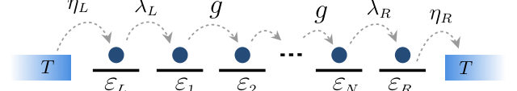
<figcaption class="paper-figure-caption"><b>Fig 5.</b> Figure 5: Diagram of the N-site chain system. The internal coupling strength between dots is given by g, λi is the coupling between the leads and the boundary dots, and ηi is the dissipation rate coupling the leads to the residual macroscopic baths which is identifiable with memory [36].</figcaption>
</figure>
</div>

<p><strong>Summary.</strong> The paper demonstrates how incorporating finite memory into the environment (bath) of a mesoscopic conductor can act as a resource to enhance transport precision. By deriving a dual impedance-matching condition, authors predict optimal bath bandwidths that suppress current noise below Markovian limits. This offers a practical strategy for designing next-generation quantum electronic devices.</p>
<p><strong>Why it may be interesting.</strong> This work provides concrete, tunable engineering principles—a 'design blueprint'—for enhancing quantum coherence and reducing noise in solid-state devices by controlling environmental coupling memory effects.</p>
<details>
<summary>Detailed structure</summary>
<p><strong>Main problem.</strong> The core problem is developing a predictive criterion for when utilizing 'bath memory' enhances quantum transport precision, addressing the lack of such a transferable connection between bath timescale and noise reduction in mesoscopic devices.</p>
<p><strong>Main result.</strong> Optimal transport precision (minimum Fano factor) can be achieved by implementing a 'dual impedance-matching condition' that synchronizes internal mode splitting, boundary dissipation, and finite bath bandwidth.</p>
<p><strong>Method.</strong> The analysis employs the Landauer–Büttiker formalism combined with Non-Equilibrium Green's Function (NEGF) techniques to calculate current noise statistics in the presence of structured baths.</p>
<p><strong>Model / system.</strong> The model is fermionic transport through a noninteracting quantum-dot chain coupled to two external fermionic baths. The bath structure is varied from Markovian wide-band limits to finite memory models using Lorentzian, Gaussian, or Newns spectral densities.</p>
<p><strong>Key observables.</strong> Current Fano factor (F), thermodynamic and kinetic precision coefficients ($Q_T, Q_K$), and the transmission function $T(\omega)$.</p>
<p><strong>Important parameters / regimes.</strong> Bath bandwidth ($\eta$), coupling strength ($g$), bias voltage ($eV$), and system size ($N$).</p>
<p><strong>Assumptions / limitations.</strong> The analysis often relies on the high-bias regime ($eV \gg T$) for analytical tractability, though generalizations are made.</p>
<p><strong>Figures summary.</strong> Figures illustrate Fano factor minima (a1) and optimal parameter pairs $(g, \eta)$ compared to theory; Figure 4 shows how the predicted minimum tracks across different bath spectral densities (Lorentzian, Gaussian, Newns).</p>
<p><strong>Paper structure.</strong> The paper systematically derives a dual impedance-matching condition by analyzing how finite memory ($\eta$) allows for constructive interference between transport modes. This leads to an analytical scaling law that predicts optimal bandwidths matching the internal system parameters.</p>
</details>
<details>
<summary>Abstract</summary>
<p>Structured baths can reshape transport fluctuations in mesoscopic quantum devices, yet a predictive criterion for when this enhances precision has been lacking. We propose a route towards such precision advantages by utilizing bath memory in coherent fermionic transport through a noninteracting quantum-dot chain. Using the Landauer-Büttiker formalism, we derive a dual impedance-matching condition that synchronizes the conductor mode splitting, boundary dissipation, and bath bandwidth, and sustains constructive multimode interference across the transmission window. The analytical predictions for the optimal bath bandwidths show excellent agreement with exact nonequilibrium Green's function calculations of the transport for Lorentzian, Gaussian, and Newns spectral densities. The prescription yields an optimal bath bandwidth at which the current Fano factor is minimized and the thermodynamic and kinetic precision coefficients are simultaneously enhanced beyond their Markovian limits. The alignment of the optimal precision regime with the experimentally accessible current Fano factor minimum thus provides a practical strategy for designing precision-enhanced transport in mesoscopic platforms such as semiconductor quantum-dot arrays and ultracold fermionic channels.</p>
</details>
<p><sub><a href="#top">↑ back to top</a></sub></p>

<p><a id="paper-2606.16623"></a></p>
<h3 id="fuzzy-processing-quantum-computation"><a href="http://arxiv.org/abs/2606.16623v1">Fuzzy-processing quantum computation</a></h3>
<p><strong>Authors:</strong> Yan-Xiong Du<br>
<strong>Type:</strong> theory · <strong>Category:</strong> quantum information and computing · <strong>PDF:</strong> <a href="https://arxiv.org/pdf/2606.16623v1">https://arxiv.org/pdf/2606.16623v1</a><br>
<strong>Analysis basis:</strong> full PDF text, analyzed in chunks
<strong>Topic relevance:</strong> <code>methods for driven-dissipative</code> <strong>3/5</strong> · <code>quantum measurements</code> <strong>3/5</strong> · <code>measurement-induced transitions</code> <strong>2/5</strong> · <code>Keldysh / 2PI / non-Gaussian methods</code> <strong>1/5</strong> · <code>correlated / nonlocal dissipation</code> <strong>1/5</strong> · <code>driven-dissipative phase transition</code> <strong>1/5</strong></p>
<div class="figure-strip-hint">↔ Scroll figures horizontally</div>
<div class="paper-figures-scroll">
<figure class="paper-figure-card">
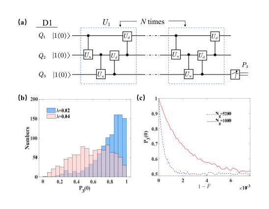
<figcaption class="paper-figure-caption"><b>Fig 1.</b> FIG. 1: Fuzzy recognition in quantum circuit. (a) The tested quantum circuit D1. (b) The distribution of P3(0) with dif- ferent intensity of noise λ = 0.02 and λ = 0.04, respectively. (c) The output P3(0) versus infidelity 1 −¯F with different amount of quantum gates Ng.</figcaption>
</figure>
<figure class="paper-figure-card">
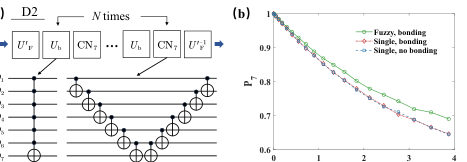
<figcaption class="paper-figure-caption"><b>Fig 2.</b> FIG. 3: Fuzzy encoding with bonding layers. (a) The tested circuit D2. (b) Performance with different input and oper- ations. The results are averaged by 500 times while the er- rorbars have nor been displayed to avoid affecting the data presentation.</figcaption>
</figure>
<figure class="paper-figure-card">
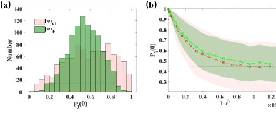
<figcaption class="paper-figure-caption"><b>Fig 3.</b> FIG. 2: Fuzzy encoding in circuit D1. (a) The distribu- tion of P3(0) with different input states |ψ⟩c1 and |ψ⟩F. (b) The output P3(0) versus infidelity 1 −¯F with different input states. Green-solid line with circles: |ψ⟩F; red-dashed line with squares: |ψ⟩c1.</figcaption>
</figure>
<figure class="paper-figure-card">
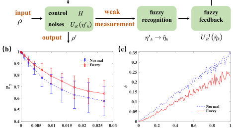
<figcaption class="paper-figure-caption"><b>Fig 4.</b> FIG. 4: Investigation of quantum control with fuzzy feed- back. (a) Schematic diagram of quantum control with fuzzy feedback. (b) The output P7 versus infidelity with different means of feedback. (c) The standard deviation of the estima- tion of the errors versus the measurement uncertainty α.</figcaption>
</figure>
<figure class="paper-figure-card">
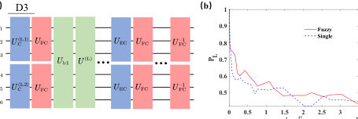
<figcaption class="paper-figure-caption"><b>Fig 5.</b> FIG. 5: Incorporation of fuzzy encoding and QEC. (a) The tested circuit D3. (b) The output PL versus infidelity 1 −¯F with fuzzy state input and single state input, respectively.</figcaption>
</figure>
</div>

<p><strong>Summary.</strong> This paper introduces fuzzy processing as a novel paradigm for enhancing quantum computation robustness against decoherence and control errors. By encoding states into probability distributions and using fuzzy logic for state recognition and feedback, it significantly improves performance over traditional methods. This makes the framework highly promising for fault-tolerant quantum computing applications.</p>
<p><strong>Why it may be interesting.</strong> For AMO physicists studying open quantum systems, this work provides a mathematical toolset (fuzzy logic) to model and mitigate the effects of unavoidable measurement uncertainty and environmental noise in complex quantum hardware implementations.</p>
<details>
<summary>Detailed structure</summary>
<p><strong>Main problem.</strong> The paper addresses decoherence and control errors in quantum computation by proposing a novel framework that integrates fuzzy processing into existing protocols.</p>
<p><strong>Main result.</strong> Integrating fuzzy recognition, encoding, and feedback significantly improves the robustness of quantum circuits, allowing for high fidelity even when gate fidelities are imperfect or precise state information is unavailable.</p>
<p><strong>Method.</strong> The core method involves replacing exact quantum state representations with fuzzy probability distributions (fuzzy encoding) and using fuzzy logic rules to interpret noisy measurement outcomes (fuzzy recognition/feedback).</p>
<p><strong>Model / system.</strong> The model utilizes standard qubit systems undergoing unitary operations, specifically applied within the context of Quantum Error Correction (QEC) circuits involving multiple qubits.</p>
<p><strong>Key observables.</strong> Average fidelity ($ar{F}$), target qubit population ($P_L$), and output state distribution spread.</p>
<p><strong>Important parameters / regimes.</strong> Noise intensity ($\lambda$ or $eta$), number of gates ($N_g$), and the degree of gate infidelity ($1-ar{F}$).</p>
<p><strong>Assumptions / limitations.</strong> The analysis assumes that fuzzy set theory provides a mathematically sound framework to handle uncertainty, though it notes limitations regarding the inclusion of full decoherence effects.</p>
<p><strong>Figures summary.</strong> Figures compare performance metrics (like $P_3(0)$ or $P_L$) for single-state versus fuzzy-encoded inputs under increasing noise/infidelity, consistently showing superior robustness for the fuzzy approach.</p>
<p><strong>Paper structure.</strong> The paper builds conceptually by first introducing fuzzy recognition to reduce fidelity requirements, then detailing fuzzy encoding to stabilize output distributions, and finally integrating both into a full QEC framework using fuzzy feedback for robust control.</p>
</details>
<details>
<summary>Abstract</summary>
<p>Quantum computation has attracted numerous attentions and develops rapidly in the recent decades. To against the decoherence and the control errors upon the qubits, quantum error corrections are adopted. Such approaches require lots of redundant qubits, accurate measurement and timely feedback. Here we investigate a new framework of quantum computation that is associated with fuzzy processing. It will benefit significantly from three aspects: the fuzzy recognition of qubit states reduce the required gate fidelity; the fuzzy encoding encodes the information of the qubits into a distribution of probability, suppressing the fluctuations in the output of long quantum circuits; the fuzzy feedback offers a more efficient way to control the qubits when precision information of quantum states are absent. Furthermore, the fuzzy processing can be integrated into quantum error correction, eliminating the need for immediate correction operations. The proposed scheme will be fairly suitable for the solution of decision problems, which has significant applications in the optimization problems and control problems.</p>
</details>
<p><sub><a href="#top">↑ back to top</a></sub></p>

<p><a id="paper-2606.15298"></a></p>
<h3 id="interlayer-pairing-mechanism-for-bilayer-nickelate-superconductors"><a href="http://arxiv.org/abs/2606.15298v1">Interlayer pairing mechanism for bilayer nickelate superconductors</a></h3>
<p><strong>Authors:</strong> Jiangfan Wang, Yi-feng Yang<br>
<strong>Type:</strong> theory · <strong>Category:</strong> strongly correlated electrons · <strong>PDF:</strong> <a href="https://arxiv.org/pdf/2606.15298v1">https://arxiv.org/pdf/2606.15298v1</a><br>
<strong>Analysis basis:</strong> full PDF text, analyzed in chunks
<strong>Topic relevance:</strong> <code>Keldysh / 2PI / non-Gaussian methods</code> <strong>3/5</strong> · <code>analog quantum simulation</code> <strong>3/5</strong> · <code>Kondo &amp; dissipative impurity</code> <strong>1/5</strong> · <code>correlated cavity matter</code> <strong>1/5</strong> · <code>entanglement &amp; information structure</code> <strong>1/5</strong> · <code>methods for driven-dissipative</code> <strong>1/5</strong> · <code>non-equilibrium dynamics</code> <strong>1/5</strong></p>
<div class="figure-strip-hint">↔ Scroll figures horizontally</div>
<div class="paper-figures-scroll">
<figure class="paper-figure-card">
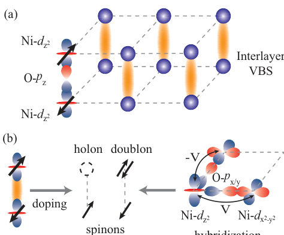
<figcaption class="paper-figure-caption"><b>Fig 1.</b> FIG. 1: Interlayer valence bonds. (a) Schematic illustra- tion of the dz2 interlayer valence bond state (VBS) in the atomic limit of bilayer nickelates. (b) Schematic diagram showing emergent dz2 holon, doublon and spinons induced by doping or interorbital hybridization.</figcaption>
</figure>
<figure class="paper-figure-card">
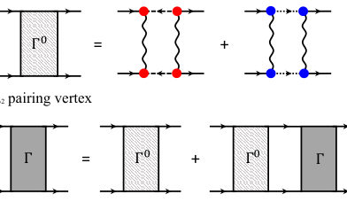
<figcaption class="paper-figure-caption"><b>Fig 2.</b> FIG. 2: Hybridization-driven superconductivity. (a) Electron-spinon-holon/doublon scattering vertices induced by the nearest-neighbor interorbital hybridization with the factor ξk = cos kx −cos ky. (b) The bare (Γ0) and full (Γ) interlayer pairing vertex of dx2−y2 electrons. Γ0 is constructed from dz2 spinon and holon (doublon) propogators, while Γ is obtained from Γ0 and dx2−y2 propogators through the Bethe-Salpeter equation.</figcaption>
</figure>
<figure class="paper-figure-card">
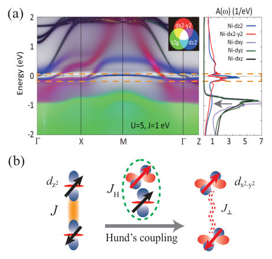
<figcaption class="paper-figure-caption"><b>Fig 3.</b> FIG. 3: Effects of the Hund’s coupling. (a) Orbital- projected spectral function and densities of states of Ni-d electrons calculated using DFT+DMFT for U = 5 eV and Hund’s coupling JH = 1 eV, showing emergent flat band and orbital-dependent renormalization due to the Hund’s cou- pling. Adapted from Ref.82. (b) Schematic diagram showing the effective interlayer J⊥between dx2−y2 orbitals transmit- ted from dz2 orbitals through the Hund’s coupling.</figcaption>
</figure>
<figure class="paper-figure-card">
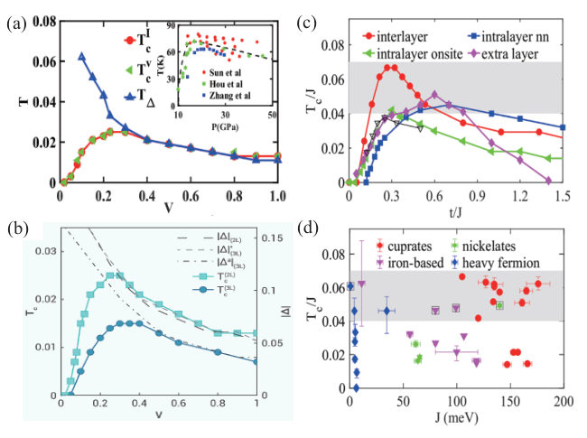
<figcaption class="paper-figure-caption"><b>Fig 4.</b> FIG. 4: Evolution of the superconducting transition temperature. (a) Tc from superconducting phase coherence as functions of the hybridization parameter V derived from the mutual information (T I c ) and the change of vortex-antivortex numbers (T V c ), calculated from Monte Carlo simulations of the bilayer t-V -J model at J/t = 0.5. T∆is the dz2 local pairing temperature. Adapted from Ref.96. (b) Comparison of Tc and the pairing amplitude |∆| for bilayer (2L) and trilayer (3L) t-V -J models. Adapted from Ref.48. (c) Tc/J as functions of t/J for different t-J type effective models of unconventional superconductivity obtained by static auxiliary field Monte Carlo simulations. (d) Collection...</figcaption>
</figure>
<figure class="paper-figure-card">
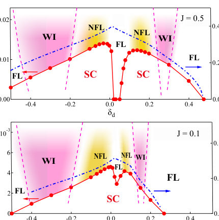
<figcaption class="paper-figure-caption"><b>Fig 5.</b> FIG. 5: Superconducting and normal state phase dia- grams predicted by the two-component theory. (a) Tc as a function of dz2 doping δd for interlayer coupling J = 0.5 at V = 0.5 and U = 7, obtained from dynamic Schwinger boson calculations of the t-V -J model. For better compar- ison with experiment, a correction factor 0.3 for Tc is used to tentatively account for phase fluctuations based on previ- ous comparison with Monte Carlo simulations96,146. The blue dash-dotted line is the dz2 valence bond amplitude ∆d at low temperature T = 0.004. The colors represent different nor- mal states including the Fermi liquid (FL), non-Fermi-liquid (NFL) and weakly insulating (WI) behaviors. The dashed...</figcaption>
</figure>
</div>

<p><strong>Summary.</strong> This review surveys the theoretical landscape of unconventional superconductivity in bilayer nickelates. It focuses on two competing mechanisms—hybridization and Hund's coupling—to explain interlayer pairing mediated by strongly correlated $d_{z^2}$ spins coupled to itinerant $d_{x^2-y^2}$ electrons. The work highlights that structural tuning, doping, and defect chemistry critically control the superconducting dome and pairing symmetry.</p>
<p><strong>Why it may be interesting.</strong> The detailed modeling of orbital physics and strong correlation effects in a layered structure provides rich ground for understanding how quantum fluctuations mediate high-temperature superconductivity, which is relevant to many open problems in AMO physics regarding interacting quantum systems.</p>
<details>
<summary>Detailed structure</summary>
<p><strong>Main problem.</strong> The central goal is understanding the microscopic mechanism responsible for superconductivity in bilayer nickelate superconductors.</p>
<p><strong>Main result.</strong> Strong correlation theories suggest that interlayer pairing arises from $d_{z^2}$ local singlet pairs, whose coherence is promoted by hybridization with itinerant $d_{x^2-y^2}$ electrons. The superconducting state exhibits complex symmetry and strong dependence on doping and structural parameters.</p>
<p><strong>Method.</strong> The work employs theoretical modeling using the bilayer two-orbital Hubbard model and its minimal t-J variants, analyzed through mean-field theory and advanced quantum simulation techniques.</p>
<p><strong>Model / system.</strong> The system is bilayer nickelates ($ ext{La}<em 7-_delta="7-\delta">3   ext{Ni}_2   ext{O}</em>$ and $d_{x^2-y^2}$) exhibiting strong electronic correlations, Hund's coupling, and significant interlayer magnetic coupling.}$), characterized by two active orbitals ($d_{z^2</p>
<p><strong>Key observables.</strong> Superconducting transition temperature ($T_c$), pairing symmetry ($  ext{s}\pm$-wave), orbital-selective mass renormalization, and normal state behaviors (FL, NFL, pseudogap).</p>
<p><strong>Important parameters / regimes.</strong> Interlayer superexchange coupling ($J_{\perp}$), Hund's coupling ($J_H$), doping level ($\delta_d$), and the hybridization strength ($V$).</p>
<p><strong>Assumptions / limitations.</strong> The analysis often separates the physics into strong correlation limits (localized $d_{z^2}$) coupled to itinerant electrons ($d_{x^2-y^2}$), or treats both orbitals within a two-orbital Hubbard framework.</p>
<p><strong>Figures summary.</strong> Figures illustrate the Interlayer Valence Bond State (VBS) and its emergent excitations, as well as simulated superconducting $T_c$ dependence on hybridization strength ($V$) and doping ($\delta_d$).</p>
<p><strong>Paper structure.</strong> The review progresses from identifying key physical ingredients (orbital structure, correlations) to introducing theoretical models (Hubbard/t-J), detailing competing pairing mechanisms (hybridization vs. Hund's coupling), analyzing the resulting superconducting symmetries, and finally discussing external tuning effects like pressure and oxygen vacancies.</p>
</details>
<details>
<summary>Abstract</summary>
<p>The discovery of superconductivity in Ruddlesden-Popper bilayer nickelates under both high pressure and ambient conditions has opened a new paradigm for exploring unconventional superconductivity. This review provides a brief survey of theoretical progress on bilayer nickelate superconductors. Drawing from the key experimental observations, we summarize essential physical ingredients including the hybridized Ni-3$d_{x^2-y^2}$ and 3$d_{z^2}$ electronic structure, orbital-dependent electronic correlation, Hund's coupling, and strong interlayer magnetic coupling. The fundamental theoretical models including the bilayer two-orbital Hubbard model and its minimal $t$-$J$ variants are introduced. Starting from the atomic-limit interlayer valence bond picture of the half-filled $d_{z^2}$ orbital, we elaborate on strong correlation interlayer pairing mechanisms based on different limiting considerations. Specific emphasis is placed on the hybridization mechanism, where the $d_{z^2}$ local singlet pairs provide the pairing energy and their hybridization with itinerant $d_{x^2-y^2}$ promotes superconducting phase coherence. We further analyze the pairing symmetry, the dependence of $T_c$ on various internal and external parameters, the nontrivial normal state properties including the Fermi liquid, non-Fermi liquid, weakly insulating and pseudogap behaviors. Effects of pressure tuning, oxygen content, and Kondo scattering induced by oxygen vacancies are also discussed. Finally, weak correlation theories based on spin fluctuations associated with Fermi surface nesting are briefly covered.</p>
</details>
<p><sub><a href="#top">↑ back to top</a></sub></p>

<p><a id="paper-2606.15983"></a></p>
<h3 id="learning-ground-state-observables-from-quantum-computing-experiments"><a href="http://arxiv.org/abs/2606.15983v1">Learning ground state observables from quantum computing experiments</a></h3>
<p><strong>Authors:</strong> Ben Jaderberg, Freya Shah, Minjun Jeon, M. Emre Sahin, Christa Zoufal, Kunal Sharma<br>
<strong>Type:</strong> both · <strong>Category:</strong> disordered systems and neural networks · <strong>PDF:</strong> <a href="https://arxiv.org/pdf/2606.15983v1">https://arxiv.org/pdf/2606.15983v1</a><br>
<strong>Analysis basis:</strong> full PDF text, analyzed in chunks
<strong>Topic relevance:</strong> <code>analog quantum simulation</code> <strong>3/5</strong> · <code>methods for driven-dissipative</code> <strong>3/5</strong> · <code>QC/QI experiment</code> <strong>2/5</strong> · <code>entanglement &amp; information structure</code> <strong>1/5</strong> · <code>exotic spin models in light-matter</code> <strong>1/5</strong> · <code>non-equilibrium dynamics</code> <strong>1/5</strong></p>
<div class="figure-strip-hint">↔ Scroll figures horizontally</div>
<div class="paper-figures-scroll">
<figure class="paper-figure-card">
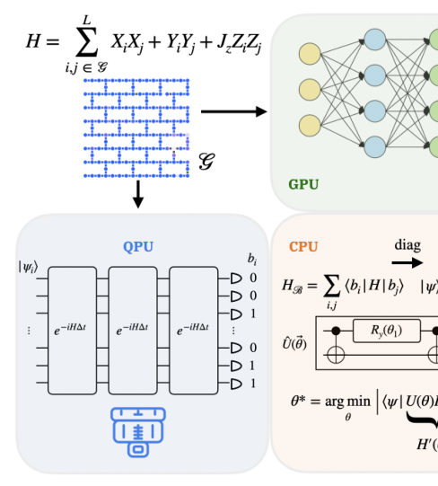
<figcaption class="paper-figure-caption"><b>Fig 1.</b> FIG. 1. Overview of the workflow. (Left) For a fixed heavy-hex lattice and anisotropy Jz of the spin- 1</figcaption>
</figure>
<figure class="paper-figure-card">
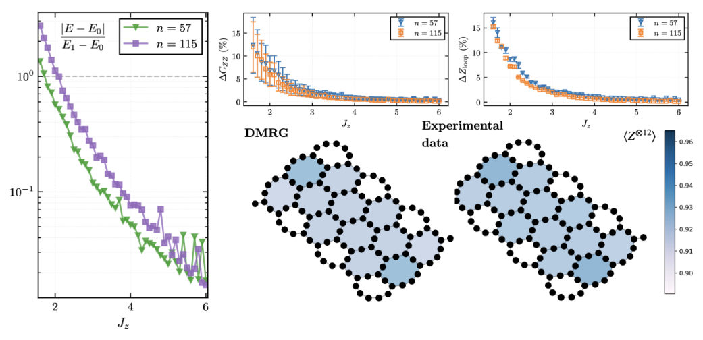
<figcaption class="paper-figure-caption"><b>Fig 2.</b> FIG. 2. Accuracy of data generated from quantum experiments. (Left) Error in the approximate ground state energy E relative to the gap to the first excited state (|E −E0|)/(E1 −E0) as calculated by DMRG. (Top) Mean percentage error between the quantum data and DMRG for Czz and Zloop, error bars show one standard deviation of the distribution of individual relative errors. (Bottom) Spatial map of ⟨Zloop⟩for n = 115 at Jz = 4.0. Colors denote 12-qubit loop values and white regions indicate 10-qubit loops not evaluated.</figcaption>
</figure>
<figure class="paper-figure-card">
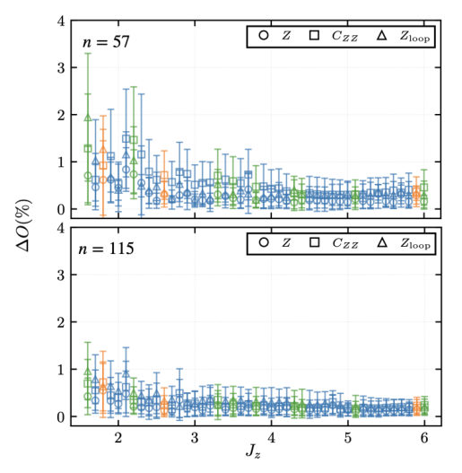
<figcaption class="paper-figure-caption"><b>Fig 3.</b> FIG. 3. Model generalization within the interior of the AFM phase as shown by mean relative error ∆OML, data(%). Er- ror bars show one standard deviation of the distribution of individual relative errors. Blue, orange and green markers correspond to Jz points from the train, validation and test data set respectively.</figcaption>
</figure>
<figure class="paper-figure-card">
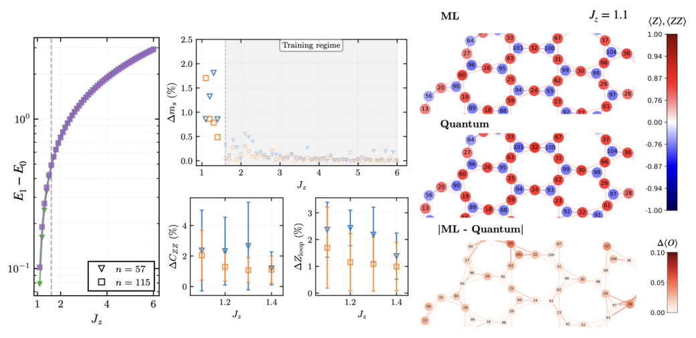
<figcaption class="paper-figure-caption"><b>Fig 4.</b> FIG. 4. Model generalization towards the phase boundary. (Left) Spectral gap E1 −E0 as a function of Jz on approaching the phase boundary at Jz = 1.0, which rapidly decreases below the training cutoff at Jz = 1.6. (Middle) Relative error between local observables predicted by ML and data from new quantum experiments outside the training regime. This includes the staggered magnetization ms, an order parameter of the AFM phase which is inferred from the model trained on ⟨Z⟩. (Right) Representative slice through the lattice at Jz = 1.1, comparing the spatially resolved observables from ML and the quantum experiments, together with the absolute difference.</figcaption>
</figure>
<figure class="paper-figure-card">
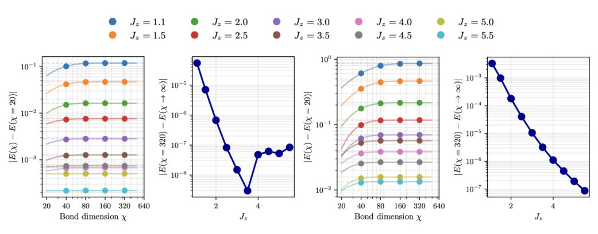
<figcaption class="paper-figure-caption"><b>Fig 5.</b> FIG. 5. DMRG energy convergence. (Left) For n = 57, the first plot shows how the energy changes when increasing from χ = 20. Circles show specific points evaluated and the solid line shows the trend following an exponential decay fitted to the energies. The offset of the exponential is the energy extrapolated to χ →∞. The second plot shows the absolute difference between E(χ = 320) and E(χ →∞). (Right) same but for n = 115.</figcaption>
</figure>
</div>

<p><strong>Summary.</strong> The paper presents an end-to-end methodology for extracting physical knowledge from experimental quantum computation results. By applying SKQD and variational optimization to generate ground state data for the 2D XXZ model, they train advanced neural networks to predict complex observables. This demonstrates a powerful paradigm shift: using near-term quantum hardware not just for simulation, but as a scalable source of training data for predictive physics models.</p>
<p><strong>Why it may be interesting.</strong> This work bridges theoretical condensed matter physics with practical quantum machine learning, showing a concrete path to using noisy, limited quantum hardware outputs as high-fidelity training data for complex many-body simulations that are otherwise computationally intractable or too resource-intensive classically.</p>
<details>
<summary>Detailed structure</summary>
<p><strong>Main problem.</strong> The core problem is developing a workflow to learn ground-state observables of interacting quantum many-body systems directly from data generated by near-term quantum computing experiments.</p>
<p><strong>Main result.</strong> The authors successfully trained machine learning models on quantum data for the 2D Heisenberg XXZ model, demonstrating accurate prediction of local observables even in out-of-distribution regimes approaching a phase boundary.</p>
<p><strong>Method.</strong> A combined approach uses Sample-based Krylov Quantum Diagonalization (SKQD) to generate approximate ground states, followed by training sophisticated neural networks (comparing global vs. geometry-aware architectures) on the resulting expectation values.</p>
<p><strong>Model / system.</strong> The system studied is the spin-1/2 XXZ model on a heavy-hexagonal lattice, parameterized by the anisotropy $J_z$. The study focuses on the antiferromagnetic phase and its approach to quantum critical points.</p>
<p><strong>Key observables.</strong> Single-site expectation values ($\langle Z 
angle$), two-point correlations ($C_{zz}$), 12-body loop correlations ($\langle Z_{	ext{loop}} 
angle$), and the staggered magnetization ($m_s$).</p>
<p><strong>Important parameters / regimes.</strong> System sizes up to $n=115$ qubits; anisotropy parameter $J_z$; training regimes span from $1.6 \le J_z \le 6.0$, with testing near $J_z = 1.0$.</p>
<p><strong>Assumptions / limitations.</strong> The primary assumptions involve the feasibility of SKQD generating sufficiently accurate data, and that ML architectures (especially geometry-aware ones) can capture complex spatial correlations beyond simple parameter dependence.</p>
<p><strong>Figures summary.</strong> Figures illustrate the workflow overview, energy error convergence relative to DMRG across $J_z$, and comparative plots showing the mean relative error ($\Delta O_{ML}$) of observables predicted by different ML architectures when extrapolating towards phase boundaries.</p>
<p><strong>Paper structure.</strong> The paper details a multi-step process: first, generating data using SKQD combined with variational basis optimization to improve ground state estimates; second, designing and training two distinct neural network architectures (global vs. local/geometry-aware) on this quantum data; and finally, rigorously testing the models' generalization capability both within and outside the trained parameter regime.</p>
</details>
<details>
<summary>Abstract</summary>
<p>Recent theoretical progress has established conditions under which machine learning models can efficiently predict ground-state properties of gapped local Hamiltonians when trained on quantum-generated data. Previous experimental demonstrations in this paradigm, however, have largely been limited to small systems or highly structured states, due to the difficulty of preparing many-body ground states on quantum processors. In this work, we demonstrate learning from experimental quantum data generated from approximate ground states of the two-dimensional Heisenberg XXZ model with system sizes up to 115 qubits. We construct a dataset of single-site expectation values, two-point correlations, and 12-body loop correlations across the antiferromagnetic phase. We then train neural networks on this data and show that they can accurately predict spatially resolved observables for previously unseen Hamiltonian parameters, both within the training distribution and in an out-of-distribution regime approaching the phase boundary. Our results demonstrate the practical realization of learning from quantum data for an interacting two-dimensional many-body system at scale, motivating a path toward regimes where quantum processors could provide training data beyond the reach of classical approximation methods.</p>
</details>
<p><sub><a href="#top">↑ back to top</a></sub></p>

<p><a id="paper-2606.17033"></a></p>
<h3 id="milestoning-markov-jump-dynamics-stationary-properties-thermodynamic-consistency-kinetic-hysteresis-and-fluctuation-symmetries"><a href="http://arxiv.org/abs/2606.17033v1">Milestoning Markov-jump dynamics: Stationary properties, thermodynamic consistency, kinetic hysteresis, and fluctuation symmetries</a></h3>
<p><strong>Authors:</strong> Tassilo Schwarz, David Hartich, Aljaž Godec<br>
<strong>Type:</strong> theory · <strong>Category:</strong> statistical mechanics · <strong>PDF:</strong> <a href="https://arxiv.org/pdf/2606.17033v1">https://arxiv.org/pdf/2606.17033v1</a><br>
<strong>Analysis basis:</strong> full PDF text, analyzed in chunks
<strong>Topic relevance:</strong> <code>methods for driven-dissipative</code> <strong>3/5</strong> · <code>non-equilibrium dynamics</code> <strong>3/5</strong> · <code>non-equilibrium universality</code> <strong>2/5</strong> · <code>Keldysh / 2PI / non-Gaussian methods</code> <strong>1/5</strong> · <code>correlated / nonlocal dissipation</code> <strong>1/5</strong> · <code>driven-dissipative phase transition</code> <strong>1/5</strong></p>
<div class="figure-strip-hint">↔ Scroll figures horizontally</div>
<div class="paper-figures-scroll">
<figure class="paper-figure-card">
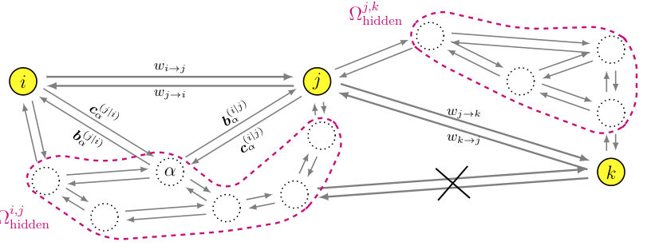
<figcaption class="paper-figure-caption"><b>Fig 1.</b> FIG. 1. Definition of the model. Network with two observed states i, j. The decomposition into observed nodes and hidden ones. Any pair of observed nodes i and j from Ωobs are connected directly via direct transition rates (wi→j and wj→i) and/or via a set of hidden nodes Ωi,j hidden = Ωi,j hidden. We assume that all hidden states α ∈Ωi,j hidden are not directly connected to a third observed state k ̸= i, j (crossed out edges).</figcaption>
</figure>
<figure class="paper-figure-card">
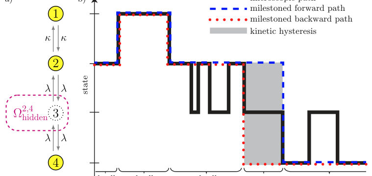
<figcaption class="paper-figure-caption"><b>Fig 2.</b> FIG. 2. A milestoned Markov process and its transition path with kinetic hysteresis: a) Microscopic model with three milestones (1,2,4) and one hidden state (3). b) Microscopic path (black) and its forward milestones (dashed blue) and backward milestoned (dotted red) path. While the waiting time of the mesoscopic 1 →2 transition consists only of dwell time (left) and is therefore identical under time reversal, the waiting time of the mesoscopic 2 →4 transition contains non-zero transition time (right), leading to kinetic hysteresis (gray area is non-zero). Importantly, even under time-scale separation λ ≫κ which leads to approximately Markovian dynamics (waiting times are approximately...</figcaption>
</figure>
<figure class="paper-figure-card">
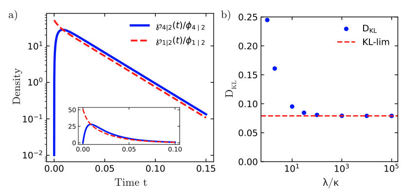
<figcaption class="paper-figure-caption"><b>Fig 3.</b> FIG. 3. Manifestation of kinetic hysteresis even in the presence of time-scale separation, i.e., in the Markovian limit. (a) Waiting time densities become almost exponential in the presence of a time-scale separation (i.e., fast hidden dynamics) in Fig. 2: For κ ≡1, λ ≡100, we converge to Markov dynamics. (b) Convergence of DKL  ℘4|2(t)/ϕ4|2||℘1|2(t)/ϕ1|2  to a non-zero value even under time-scale separation.</figcaption>
</figure>
<figure class="paper-figure-card">
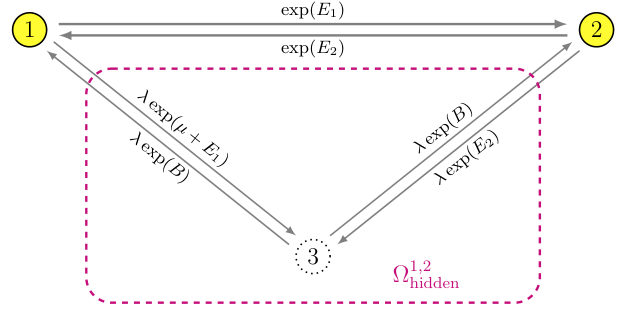
<figcaption class="paper-figure-caption"><b>Fig 4.</b> FIG. 4. The unobservable non-equilibrium cycle. Transitions can happen either directly from state 1 to 2, or via the hidden state 3, so that only transitions between two states and thereby no cyclic transitions are observable. From the transition-path time distributions, it is possible to infer model parameters and thereby the driving of the unobservable cycle. We provide a detailed analysis thereof in Section I E 1</figcaption>
</figure>
<figure class="paper-figure-card">
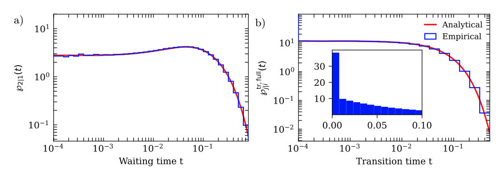
<figcaption class="paper-figure-caption"><b>Fig 5.</b> FIG. 5. Density of (a) the waiting time and (b) the transition time in the unobserved non-equilibrium cycle of transitioning from observed state 1 to observed state 2: The analytical solution (red line) matches the measured waiting time distribution (blue). The direct jump ϕjump 2|1 δ(t) can be seen at time t = 0 in the inset of (b). We considered a trajectory of 107 steps, after simulating initial 107 steps for equilibration. Parameters are E1 = 1, E2 = 3, B = 5, λ = exp(−3), and µ = 5.</figcaption>
</figure>
</div>

<p><strong>Summary.</strong> This paper develops a comprehensive theory for exactly mapping underlying Markov-jump dynamics onto observable semi-Markov processes via 'milestoning.' It rigorously characterizes the resulting kinetics by decomposing waiting times into dwell and transition components. The key findings establish thermodynamic consistency, quantify kinetic hysteresis, and provide methods to infer hidden physical affinities from observed time statistics.</p>
<p><strong>Why it may be interesting.</strong> This work provides powerful, general theoretical tools for analyzing non-equilibrium steady states in complex biological or chemical systems where direct observation is impossible. The rigorous connection between coarse-graining, memory effects, and fundamental thermodynamic quantities like entropy production is highly relevant to open quantum system modeling.</p>
<details>
<summary>Detailed structure</summary>
<p><strong>Main problem.</strong> The core problem is deriving an exact, thermodynamically consistent coarse-graining of underlying Markov-jump processes into observable semi-Markov dynamics (milestoning). This addresses how memory effects arise when observing a system only at discrete points in time.</p>
<p><strong>Main result.</strong> The theory successfully decomposes the waiting time distribution into conditionally independent dwell and transition times, proves its thermodynamic consistency, and demonstrates that kinetic hysteresis persists even when the observed process approaches Markovian behavior.</p>
<p><strong>Method.</strong> The authors use rigorous mathematical derivations involving generator matrices, Laplace transforms, and renewal theory to analyze the joint probability densities of state transitions across hidden intermediate states.</p>
<p><strong>Model / system.</strong> The model is a generic ergodic Markov-jump process on a full state space $\Omega$, which is partitioned into observable states ($\Omega_{	ext{obs}}$) and unobserved hidden states ($\Omega_{	ext{hidden}}$). The dynamics are analyzed by constructing an effective semi-Markov generator matrix.</p>
<p><strong>Key observables.</strong> Waiting-time distributions, dwell times, transition-path times, steady-state entropy production rate ($\dot{\sigma}$), and the affinity ($A_{ij}$) between states.</p>
<p><strong>Important parameters / regimes.</strong> Time-scale separation limits ($\lambda/\kappa 	o \infty$), barrier heights ($B$), driving intensities ($M$), and the number of parallel hidden mechanisms ($V$).</p>
<p><strong>Assumptions / limitations.</strong> The underlying microscopic dynamics satisfy detailed balance (or are analyzed under conditions that allow for thermodynamic consistency checks). The analysis relies on specific structural assumptions about how hidden states connect observed nodes.</p>
<p><strong>Figures summary.</strong> Figures illustrate model structures, the manifestation of kinetic hysteresis via non-zero KL divergence in waiting time densities, and numerical validation showing the recovery of entropy production rates using milestoning estimators.</p>
<p><strong>Paper structure.</strong> The paper progresses by first establishing the mathematical framework for coarse-graining (Chunk 1), deriving the decomposition of waiting times into dwell/transition components (Chunk 2), proving thermodynamic consistency and reflection symmetry properties (Chunk 3), generalizing to multiple parallel hidden mechanisms (Chunk 4), and finally applying these results to continuous systems like diffusion on a ring potential (Chunk 5).</p>
</details>
<details>
<summary>Abstract</summary>
<p>We derive an exact coarse graining of generic Markov-jump processes into observable semi-Markov dynamics. Exact results for waiting-time distributions for jumps between observable states are derived and proved that these decompose into conditionally independent dwell and transition times. Dwell times are proved to be a local property of mesostates - they depend on the initial but not final state. Conversely, transition-path times depend on both states, trigger kinetic hysteresis, and, under suitable conditions on the hidden sub-network, are shown to obey a reflection symmetry. We characterize the stationary properties of the milestoned dynamics, prove its thermodynamic consistency, and demonstrate robustness to milestone positioning. Surprisingly, even in the limit of a time-scale separation rendering the observed dynamics approximately Markovian, the effect of kinetic hysteresis on the dissipation persists. A minimal example shows how the results lay the foundation for inferring affinities of hidden dissipative cycles from observations of transition-path times.</p>
</details>
<p><sub><a href="#top">↑ back to top</a></sub></p>

<p><a id="paper-2606.16249"></a></p>
<h3 id="multiband-transport-hierarchy-and-large-nernst-effect-in-euaubi-establishing-a-nernst-scaling-for-asymmetric-multiband-systems"><a href="http://arxiv.org/abs/2606.16249v1">Multiband transport hierarchy and large Nernst effect in EuAuBi: Establishing a Nernst scaling for asymmetric multiband systems</a></h3>
<p><strong>Authors:</strong> Weimin Quan, Xiaodong Guo, Lingxiao Zhao, Shengwei Chi, Gang Xu, Zengwei Zhu, Xiaokang Li<br>
<strong>Type:</strong> both · <strong>Category:</strong> strongly correlated electrons · <strong>PDF:</strong> <a href="https://arxiv.org/pdf/2606.16249v1">https://arxiv.org/pdf/2606.16249v1</a><br>
<strong>Analysis basis:</strong> full PDF text, analyzed in chunks
<strong>Topic relevance:</strong> <code>Keldysh / 2PI / non-Gaussian methods</code> <strong>3/5</strong> · <code>driven-dissipative phase transition</code> <strong>2/5</strong> · <code>non-equilibrium universality</code> <strong>2/5</strong> · <code>Kondo &amp; dissipative impurity</code> <strong>1/5</strong> · <code>analog quantum simulation</code> <strong>1/5</strong> · <code>methods for driven-dissipative</code> <strong>1/5</strong> · <code>non-equilibrium dynamics</code> <strong>1/5</strong></p>
<div class="figure-strip-hint">↔ Scroll figures horizontally</div>
<div class="paper-figures-scroll">
<figure class="paper-figure-card">
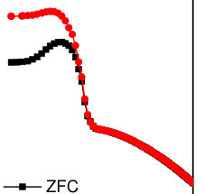
<figcaption class="paper-figure-caption"><b>Fig 1.</b> FIG. 1. Longitudinal transport in EuAuBi. (a) Crystal structure of EuAuBi, consisting of a layered Au–Bi honeycomb lattice that gives rise to a polar crystal structure along the c axis. (b) Calculated band structure of EuAuBi. Red and blue symbols denote the projections onto Au-s and Bi-p orbitals, respectively. Near the A point, band inversion produces a band crossing below the Fermi level, giving rise to a small electron pocket, as highlighted in the inset [15]. (c) Temperature dependence of the resistivity ρxx from 1.8 to 300 K. The antiferromagnetic transition and superconducting transition are marked by black arrows in the inset, respectively. (d) Temperature-dependent magnetization...</figcaption>
</figure>
<figure class="paper-figure-card">
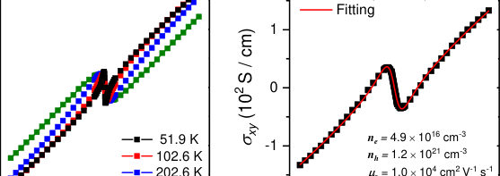
<figcaption class="paper-figure-caption"><b>Fig 2.</b> FIG. 2. Multicarrier Hall transport in EuAuBi. (a, b) Magnetic-field dependence of the Hall resistivity ρyx at selected temperatures. A pronounced step-like feature develops in the low-field region and becomes increasingly prominent with in- creasing temperature, indicative of multicarrier transport. (c, d) Hall conductivity σxy at 11.1 K and 302.6K, converted from ρyx, together with the corresponding fit to the two-band model. The fitting reveals two distinct carrier components: a large hole pocket with high carrier density and low mobility, and a small electron pocket with low carrier density but high mobility. (e) Temperature dependences of the carrier densities extracted from the...</figcaption>
</figure>
<figure class="paper-figure-card">
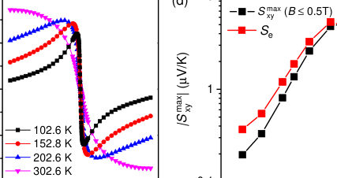
<figcaption class="paper-figure-caption"><b>Fig 3.</b> FIG. 3. Large Nernst effect in EuAuBi. (a, b) Magnetic-field dependence of the Nernst signal for EuAuBi. (c) Nernst signal Sxy at 11.1 K, together with the corresponding fit to the single-band thermoelectric model (see text). In the fitting, the carrier mobilities were fixed to the values extracted from the two-band Hall analysis. (d) The maximum Nernst signal value Smax xy and fitting amplitude -Se at each temperature point. (e) Nernst coefficient divided by temperature, ν/T, plotted as a function of µ/EF in different materials. The dashed line represents the theoretical scaling relation ν/T ∝µ/EF [14]. For EuAuBi (red stars), the scaling is examined using two choices of Fermi-energy...</figcaption>
</figure>
</div>

<p><strong>Summary.</strong> This work investigates multiband transport in EuAuBi, a material with vastly different electron and hole carrier densities. By analyzing the Nernst effect across various magnetic fields and temperatures, the authors establish that the large signal originates from conventional semiclassical physics involving two distinct pockets. They derive a new scaling law for $
u/T$ specific to asymmetric multiband systems.</p>
<p><strong>Why it may be interesting.</strong> While focused on condensed matter transport, the rigorous derivation of scaling laws in multi-component systems (like those involving multiple electronic bands) provides generalizable principles applicable to open quantum systems where different coupling channels might dominate response functions.</p>
<details>
<summary>Detailed structure</summary>
<p><strong>Main problem.</strong> The study addresses how transport coefficients, particularly the Nernst effect, behave in materials with coexisting carrier pockets of vastly different densities.</p>
<p><strong>Main result.</strong> The large Nernst effect is shown to be a semiclassical multiband phenomenon governed by a specific scaling relation ($
u/T \propto \mu_e/E_{F,tot}$), rather than being purely topological.</p>
<p><strong>Method.</strong> The authors combine experimental measurements (resistivity, Hall effect, Seebeck, Nernst) with theoretical modeling using semi-classical two-band transport equations.</p>
<p><strong>Model / system.</strong> The research focuses on the polar semimetal EuAuBi, which exhibits an extreme carrier density mismatch between a dense hole pocket and a dilute, high-mobility electron pocket. The analysis employs a two-band model to describe total transport properties.</p>
<p><strong>Key observables.</strong> Longitudinal resistivity ($
ho_{xx}$), Hall effect ($
ho_{yx}$), Seebeck coefficient ($S_{xx}$), and Nernst signal ($S_{xy}$).</p>
<p><strong>Important parameters / regimes.</strong> Carrier densities ($n_e \sim 10^{16} 	ext{ cm}^{-3}, n_h \sim 10^{21} 	ext{ cm}^{-3}$), electron mobility ($\mu_e$), and the total Fermi energy scale ($E_{F,tot}$).</p>
<p><strong>Assumptions / limitations.</strong> The analysis relies on semi-classical two-band expressions for transport coefficients and assumes an asymmetric limit where specific cancellations occur in the Nernst coefficient derivation.</p>
<p><strong>Figures summary.</strong> Figures illustrate the crossover of $
ho_{xx}$ to hole dominance, the temperature dependence of $S_{xx}$, and the low-field step-like feature in $
ho_{yx}(B)$ attributed to the electron pocket. The scaling analysis plots $
u/T$ against different energy scales.</p>
<p><strong>Paper structure.</strong> The paper first establishes a transport hierarchy using measurements on EuAuBi, showing which pocket dominates which coefficient. It then derives the theoretical low-field Nernst response for an asymmetric two-band system, leading to a revised scaling law that is confirmed by fitting experimental data.</p>
</details>
<details>
<summary>Abstract</summary>
<p>In correlated materials, coexisting pockets of vastly different carrier densities raise two fundamental questions: which pocket governs the various transport coefficients, and does the conventional Nernst scaling $ν/T \propto μ/E_F$, originally derived for single-band systems, still hold? We address both questions in the polar semimetal EuAuBi, where a dilute electron pocket ($n_e \sim 10^{16}~\mathrm{cm}^{-3}$) coexists with a dense hole pocket ($n_h \sim 10^{21}~\mathrm{cm}^{-3}$). We find a clear hierarchy: the hole pocket dominates the longitudinal resistivity; the Hall effect crosses from electron- to hole-dominance with increasing field; the Seebeck coefficient is dominated by the electron pocket at low temperature and by both pockets at high temperature. Remarkably, the Nernst effect is governed entirely by the ultrahigh-mobility electron pocket, yielding a large low-field signal of $\sim 5~μ\mathrm{V/K}$ near 1~T at 202~K, comparable to anomalous Nernst signals in magnetic Weyl semimetals. By analyzing the two-band thermoelectric conductivity, we show that the Nernst coefficient follows a scaling $ν/T \propto μ_e/{E_{F, tot}}$. This scaling originates from a compensation between the electron-to-hole conductivity ratio and the Fermi-energy ratio, establishing that the large Nernst effect is a semiclassical multiband phenomenon rather than a topological Berry-curvature contribution. This understanding advances the thermoelectric transport physics of multiband electronic systems and offers a guiding principle for low-field transverse thermoelectric design.</p>
</details>
<p><sub><a href="#top">↑ back to top</a></sub></p>

<p><a id="paper-2606.16071"></a></p>
<h3 id="bright-emission-from-dark-sources-in-hyperbolic-media"><a href="http://arxiv.org/abs/2606.16071v1">Bright Emission from Dark Sources in Hyperbolic Media</a></h3>
<p><strong>Authors:</strong> Evgenii E. Narimanov<br>
<strong>Type:</strong> theory · <strong>Category:</strong> other · <strong>PDF:</strong> <a href="https://arxiv.org/pdf/2606.16071v1">https://arxiv.org/pdf/2606.16071v1</a><br>
<strong>Analysis basis:</strong> full PDF text, analyzed in chunks
<strong>Topic relevance:</strong> <code>interference shaping light</code> <strong>3/5</strong> · <code>correlated / nonlocal dissipation</code> <strong>2/5</strong> · <code>Keldysh / 2PI / non-Gaussian methods</code> <strong>1/5</strong> · <code>Tavis-Cummings &amp; cavity-many-emitter</code> <strong>1/5</strong> · <code>correlated cavity matter</code> <strong>1/5</strong> · <code>driven-dissipative phase transition</code> <strong>1/5</strong> · <code>methods for driven-dissipative</code> <strong>1/5</strong></p>
<div class="figure-strip-hint">↔ Scroll figures horizontally</div>
<div class="paper-figures-scroll">
<figure class="paper-figure-card">
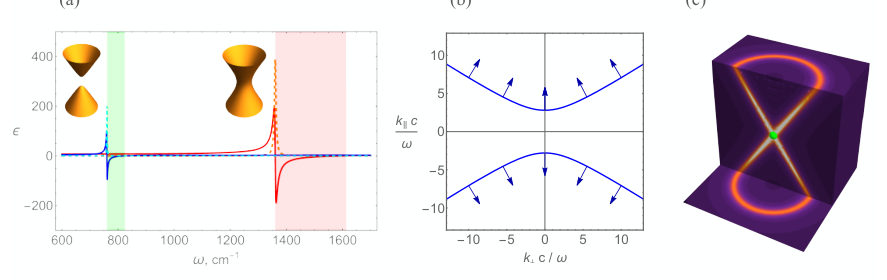
<figcaption class="paper-figure-caption"><b>Fig 1.</b> FIG. 1. Emission from a multipole-free spherical source in a hyperbolic medium. (a) Frequency-dependent permittivity components of hexagonal boron nitride (hBN). The shaded regions indicate spectral bands with hyperbolic dispersion; the insets show the topology of the corresponding iso-frequency surfaces. (b) Iso-frequency contours in momentum space at free- space wavelength λ = 13 µm (ω ≈769 cm−1), within the lower hyperbolic Reststrahlen band of hBN.[14, 15] The open dispersion curves support propagation of high-momentum modes, with energy flow directed along the hyperbolic cone directions. (c) Real- space electric field intensity generated by a spherically symmetric, charge-neutral...</figcaption>
</figure>
<figure class="paper-figure-card">

<figcaption class="paper-figure-caption"><b>Fig 2.</b> FIG. 2. Autofocusing and interaction of spherically symmetric emitters in a cylindrical hyperbolic medium. (a) Geometry of the system: a spherically symmetric, charge-neutral emitter (green) is placed on the axis of a cylindrical hyperbolic medium. (b) Electric field intensity in the (x, z) plane. Hyperbolic propagation in the confined geometry leads to periodic refocusing of the field along the cylinder axis, producing a sequence of localized intensity maxima. The dashed lines indicate the cylinder boundaries. (c) Interaction energy between two emitters placed on the cylinder axis, as a function of their separation. The refocused field results in strongly enhanced, spatially localized...</figcaption>
</figure>
</div>

<p><strong>Summary.</strong> This paper shows how anisotropic hyperbolic media can enable visible/near-IR light-matter interactions even when the source itself has no conventional dipole moment. By exploiting the unique field confinement and directional properties of these materials, a 'dark' emitter becomes radiatively active. This establishes a new platform for controlling quantum optical processes in solid-state systems.</p>
<p><strong>Why it may be interesting.</strong> This work provides a novel mechanism for achieving strong light-matter coupling using solid-state platforms that overcome fundamental spectral limitations by engineering the vacuum structure via hyperbolic dispersion. It extends quantum optics into regimes previously thought inaccessible.</p>
<details>
<summary>Detailed structure</summary>
<p><strong>Main problem.</strong> The primary challenge is reconciling the spectral mismatch between low-loss hyperbolic media (limited to mid-IR) and robust quantum emitters operating at visible/near-IR frequencies.</p>
<p><strong>Main result.</strong> The authors demonstrate that a source with zero dipole moment, which would be non-radiating in isotropic media, becomes radiatively active and exhibits strong directional coupling within an anisotropic hyperbolic environment.</p>
<p><strong>Method.</strong> The analysis uses quasistatic approximations to calculate the electric field and emitter-emitter interaction energy ($U$), focusing on how anisotropy modifies radiative processes.</p>
<p><strong>Model / system.</strong> The system involves using visible/near-IR emitters coupled into hyperbolic dielectric media, exemplified by hexagonal boron nitride (hBN). The key mechanism relies on inducing mid-infrared population dynamics to generate radiation in the desired frequency band.</p>
<p><strong>Key observables.</strong> Radiative activity of 'dark sources,' strong directional emission patterns following hyperbolic cones, and highly anisotropic interaction energy scaling as $1/r^3$ or enhanced at focal points ($\propto 1/\ell_f^3$).</p>
<p><strong>Important parameters / regimes.</strong> The effective permittivity $\epsilon_{	ext{eff}}(\hat{\mathbf{r}})$, the separation distance ($r$ or $\delta z$), and the characteristic length scales related to hyperbolic dispersion bands.</p>
<p><strong>Assumptions / limitations.</strong> The analysis assumes low material losses in the hyperbolic medium and utilizes the quasistatic approximation for field calculations at short distances.</p>
<p><strong>Figures summary.</strong> Figures illustrate the frequency-dependent permittivity of hBN, momentum space contours showing high-momentum mode propagation along hyperbolic cones, and finally, the strong emission pattern and periodic refocusing/autofocusing of interaction energy within a cylindrical geometry.</p>
<p><strong>Paper structure.</strong> The paper first establishes the spectral mismatch problem. It then theoretically derives how anisotropic hyperbolic media allow non-dipolar sources to radiate. Finally, it applies this theory to model emitter-emitter interactions in confined geometries, showing strong enhancement at focal points.</p>
</details>
<details>
<summary>Abstract</summary>
<p>Hyperbolic media enable ultra-strong light-matter interactions through their extreme field localization and small mode volumes, but low-loss realizations are fundamentally limited to the mid-infrared, owing to the long lifetimes of optical phonons in high-quality crystals. Here we show that bright emitters operating at visible or near-infrared frequencies can be used to generate radiation in this regime by inducing mid-infrared population dynamics, thereby creating a source in the hyperbolic frequency band without a corresponding dipole transition. We demonstrate that even a source with vanishing dipole and higher multipole moments - strictly non-radiating in any isotropic medium - becomes radiatively active in a hyperbolic environment. This enables visible and near-infrared control of light-matter interactions in polaritonic hyperbolic materials, establishing a new low-loss solid-state quantum optics platform.</p>
</details>
<p><sub><a href="#top">↑ back to top</a></sub></p>

<p><a id="paper-2606.15066"></a></p>
<h3 id="quantum-simulation-of-the-liouville-equation-in-classical-mechanics-with-discontinuous-potential-via-schrodingerization"><a href="http://arxiv.org/abs/2606.15066v1">Quantum simulation of the Liouville equation in classical mechanics with discontinuous potential via Schrödingerization</a></h3>
<p><strong>Authors:</strong> Shi Jin, Shuyi Zhang<br>
<strong>Type:</strong> theory · <strong>Category:</strong> quantum information and computing · <strong>PDF:</strong> <a href="https://arxiv.org/pdf/2606.15066v1">https://arxiv.org/pdf/2606.15066v1</a><br>
<strong>Analysis basis:</strong> full PDF text, analyzed in chunks
<strong>Topic relevance:</strong> <code>methods for driven-dissipative</code> <strong>3/5</strong> · <code>Keldysh / 2PI / non-Gaussian methods</code> <strong>2/5</strong> · <code>non-equilibrium dynamics</code> <strong>2/5</strong> · <code>correlated / nonlocal dissipation</code> <strong>1/5</strong> · <code>driven-dissipative phase transition</code> <strong>1/5</strong> · <code>non-equilibrium universality</code> <strong>1/5</strong></p>
<div class="figure-strip-hint">↔ Scroll figures horizontally</div>
<div class="paper-figures-scroll">
<figure class="paper-figure-card">

<figcaption class="paper-figure-caption"><b>Fig 1.</b> Figure 1: Change of particle momentum across a potential barrier for the case when ξ−&gt; 0.</figcaption>
</figure>
<figure class="paper-figure-card">

<figcaption class="paper-figure-caption"><b>Fig 2.</b> Figure 2: Example 8.1, the density distribution function f(x, ξ, t) at t = 1. First row: 3D plot; second row: contour plot. First column: the exact solution; second column: the classical numerical solution; third column: the Schrödingerization solution.</figcaption>
</figure>
<figure class="paper-figure-card">

<figcaption class="paper-figure-caption"><b>Fig 3.</b> Figure 3: Example 8.2, the density distribution function f(x, ξ, t) at t = 1.8. First row: 3D plot; second row: contour plot. First column: the exact solution; second column: the classical numerical solution; third column: the Schrödingerization solution.</figcaption>
</figure>
<figure class="paper-figure-card">

<figcaption class="paper-figure-caption"><b>Fig 4.</b> Figure 4: Example 8.2, the density ρ and averaged velocity u at t = 1.8. Solid blue line: the exact solution; green “o”: the classical numerical solution; red solid line with “×”: the Schrödingerization solution. Left: the density ρ; Right: the averaged velocity u.</figcaption>
</figure>
<figure class="paper-figure-card">

<figcaption class="paper-figure-caption"><b>Fig 5.</b> Figure 5: Example 8.3, the density ρ at t = 0.4. First column: the exact solution; second column: the classical numerical solution; third column: the Schrödingerization solution.</figcaption>
</figure>
</div>

<p><strong>Summary.</strong> The paper presents a novel quantum algorithm to simulate the Liouville equation for classical mechanics with potential barriers. It achieves this by merging Hamiltonian-preserving numerical schemes with Schrödingerization, transforming the problem into a sparse unitary evolution suitable for quantum computation. This approach offers a significant polynomial advantage in scaling compared to traditional classical grid methods.</p>
<p><strong>Why it may be interesting.</strong> This work directly addresses simulating non-unitary dynamics (like Liouville flow) using unitary quantum computation frameworks, which is a major theme in open quantum systems and quantum simulation theory.</p>
<details>
<summary>Detailed structure</summary>
<p><strong>Main problem.</strong> Developing quantum simulation algorithms for the Liouville equation of classical mechanics when the potential is discontinuous, requiring specialized handling of transmission/reflection fluxes.</p>
<p><strong>Main result.</strong> The proposed method achieves a polynomial scaling in inverse accuracy ($\epsilon^{-k}$) and avoids the exponential dependence on phase-space dimension inherent to classical grid methods.</p>
<p><strong>Method.</strong> It combines Hamiltonian-preserving schemes with the Schrödingerization technique, embedding the nonunitary dynamics into a unitary evolution simulated using sparse-access quantum oracles.</p>
<p><strong>Model / system.</strong> The system is governed by the Liouville equation for phase-space density $f$ in classical mechanics. The challenge arises from potential barriers causing discontinuous flux conditions that must be preserved during simulation.</p>
<p><strong>Key observables.</strong> Density ($
ho$), averaged velocity ($u$), and the full phase-space distribution function $f(x, \xi, t)$.</p>
<p><strong>Important parameters / regimes.</strong> Simulation error $\epsilon$, total time $T$, and the dimensionality of the problem (1D, 2D, n-D).</p>
<p><strong>Assumptions / limitations.</strong> The analysis relies on the sparse-access oracle model for quantum simulation; multidimensional extensions assume interfaces align with Cartesian grids.</p>
<p><strong>Figures summary.</strong> Figures compare numerical solutions (density and velocity) obtained via exact classical methods against those derived from the proposed Schrödingerization approach across 1D, 2D, and measure-valued problems, confirming physical consistency.</p>
<p><strong>Paper structure.</strong> The paper reviews the physics of barriers, details the Schrödingerization framework, constructs sparse matrix representations for Hamiltonian-preserving fluxes in increasing dimensions (1D to n-D), analyzes the resulting quantum query complexity, and finally describes observable readout techniques.</p>
</details>
<details>
<summary>Abstract</summary>
<p>We develop quantum simulation algorithms for the Liouville equation of classical mechanics with discontinuous potential. Such discontinuities represent potential barriers at which classical particles undergo energy preserving transmission or reflection, and the resulting interface conditions must be incorporated into the numerical flux. We combine Hamiltonian-preserving schemes by Jin and Wen in Commun. Math. Sci. 3(3), 285-315 (2005) with the Schrödingerization method, which embeds the resulting nonunitary semi-discrete dynamics into a unitary Schrödinger type system in one additional auxiliary variable [arXiv:2212.14703, arXiv:2212.13969]. For one-, two-, and $n$-dimensional problems with grid aligned interfaces, we construct sparse matrix representations of the transmission and reflection fluxes using step and hat functions, derive the corresponding Hamiltonians of the Schrödingerized systems, and analyze their sparse-access query complexity. In the sparse-access oracle model, the resulting algorithms have a polynomial dependence on the inverse accuracy and avoid the exponential dependence on the phase-space dimension suffered by classical grid based Hamiltonian-preserving schemes, up to the cost of implementing the oracles and the postselection overhead. We also describe the postselected recovery of the physical solution state and the quantum readout of macroscopic observables such as density and averaged velocity through overlap estimation. Numerical experiments based on classical simulation of the Schrödingerized dynamics validate the proposed formulation and illustrate the correct transmission/reflection behavior at potential barriers.</p>
</details>
<p><sub><a href="#top">↑ back to top</a></sub></p>

<p><a id="paper-2606.16225"></a></p>
<h3 id="the-free-energy-of-the-square-lattice-ising-model-with-interactions-alternating-in-horizontal-and-vertical-directions"><a href="http://arxiv.org/abs/2606.16225v1">The free energy of the square lattice Ising model with interactions alternating in horizontal and vertical directions</a></h3>
<p><strong>Authors:</strong> Kazuhiko Minami<br>
<strong>Type:</strong> theory · <strong>Category:</strong> statistical mechanics · <strong>PDF:</strong> <a href="https://arxiv.org/pdf/2606.16225v1">https://arxiv.org/pdf/2606.16225v1</a><br>
<strong>Analysis basis:</strong> full PDF text, analyzed in chunks
<strong>Topic relevance:</strong> <code>analog quantum simulation</code> <strong>3/5</strong> · <code>exotic spin models in light-matter</code> <strong>3/5</strong> · <code>Keldysh / 2PI / non-Gaussian methods</code> <strong>1/5</strong> · <code>entanglement &amp; information structure</code> <strong>1/5</strong> · <code>methods for driven-dissipative</code> <strong>1/5</strong> · <code>non-equilibrium dynamics</code> <strong>1/5</strong></p>
<div class="figure-strip-hint">↔ Scroll figures horizontally</div>
<div class="paper-figures-scroll">
<figure class="paper-figure-card">

<figcaption class="paper-figure-caption"><b>Fig 1.</b> Low-resolution page preview, page 2</figcaption>
</figure>
<figure class="paper-figure-card">

<figcaption class="paper-figure-caption"><b>Fig 2.</b> Low-resolution page preview, page 3</figcaption>
</figure>
<figure class="paper-figure-card">

<figcaption class="paper-figure-caption"><b>Fig 3.</b> Low-resolution page preview, page 4</figcaption>
</figure>
<figure class="paper-figure-card">

<figcaption class="paper-figure-caption"><b>Fig 4.</b> Low-resolution page preview, page 5</figcaption>
</figure>
<figure class="paper-figure-card">

<figcaption class="paper-figure-caption"><b>Fig 5.</b> Low-resolution page preview, page 6</figcaption>
</figure>
</div>

<p><strong>Summary.</strong> This paper provides an exact derivation of the free energy for a specific square lattice Ising model featuring alternating interactions. It achieves this using sophisticated transfer matrix techniques, establishing crucial mathematical links showing that the system's behavior is equivalent to both Onsager's classic result and the Lee-Yang theory describing frustrated plaquettes.</p>
<p><strong>Why it may be interesting.</strong> While focused on classical statistical mechanics, the use of advanced mathematical techniques (like mapping to bosonic operators) and the deep connections drawn between different exactly solvable models are highly relevant for understanding complex quantum many-body systems in AMO physics.</p>
<details>
<summary>Detailed structure</summary>
<p><strong>Main problem.</strong> The primary goal is deriving the exact free energy of the Ising model defined on a square lattice where the interactions alternate in both horizontal and vertical directions.</p>
<p><strong>Main result.</strong> The paper successfully derives the general free energy formula, establishing deep connections between this alternating interaction model, Onsager's solution, and the Lee-Yang partition function associated with frustrated plaquettes.</p>
<p><strong>Method.</strong> The derivation heavily relies on the transfer matrix formalism, employing advanced mathematical techniques involving bosonic operator transformations (analogous to Jordan-Wigner) and solving characteristic eigenvalue equations.</p>
<p><strong>Model / system.</strong> The system is a square lattice Ising model characterized by an alternating Hamiltonian structure involving four distinct interaction couplings ($K_1, K_2, L_1, L_2$).</p>
<p><strong>Key observables.</strong> Free energy ($ ext{-}eta F$), eigenvalues ($\lambda$), and the relationship between different free energy forms.</p>
<p><strong>Important parameters / regimes.</strong> Interaction coupling constants ($K_1, K_2, L_1, L_2$) and the imaginary magnetic field strength ($i\pi/2$).</p>
<p><strong>Assumptions / limitations.</strong> Periodic boundary conditions are assumed in both lattice directions for the final thermodynamic limit analysis.</p>
<p><strong>Figures summary.</strong> Figures illustrate the correspondence between applying an imaginary magnetic field $i\pi/2$ to a site and creating a frustrated square on the dual lattice, linking this concept to dimer coverings.</p>
<p><strong>Paper structure.</strong> The paper proceeds by setting up the alternating Hamiltonian, employing the transfer matrix method involving operator transformations, deriving the characteristic eigenvalue equation, and finally calculating the free energy in terms of integrals over momentum space, confirming special cases like Onsager's model and Lee-Yang theory.</p>
</details>
<details>
<summary>Abstract</summary>
<p>The free energy of the Ising model on the square lattice with alternating interactions in both horizontal and vertical directions is exactly derived. This model is distinct from the checkerboard Ising model. The result includes Onsager's free energy as a special case, and also includes Lee-Yang's free energy with an imaginary field, and relates these two solutions via continuous parameters. It is also derived that each imaginary magnetic field $iπ/2$ applied to a lattice site corresponds to a single frustrated square in its dual lattice.</p>
</details>
<p><sub><a href="#top">↑ back to top</a></sub></p>

<p><a id="paper-2606.16339"></a></p>
<h3 id="thermodynamic-uncertainty-relation-for-a-multi-phase-alternating-renewal-random-walk"><a href="http://arxiv.org/abs/2606.16339v1">Thermodynamic Uncertainty Relation For a Multi-Phase Alternating Renewal Random Walk</a></h3>
<p><strong>Authors:</strong> Fatemeh Karimi, Farhad H. Jafarpour<br>
<strong>Type:</strong> theory · <strong>Category:</strong> statistical mechanics · <strong>PDF:</strong> <a href="https://arxiv.org/pdf/2606.16339v1">https://arxiv.org/pdf/2606.16339v1</a><br>
<strong>Analysis basis:</strong> full PDF text, analyzed in chunks
<strong>Topic relevance:</strong> <code>methods for driven-dissipative</code> <strong>3/5</strong> · <code>non-equilibrium dynamics</code> <strong>3/5</strong> · <code>non-equilibrium universality</code> <strong>2/5</strong> · <code>Keldysh / 2PI / non-Gaussian methods</code> <strong>1/5</strong> · <code>driven-dissipative phase transition</code> <strong>1/5</strong></p>
<div class="figure-strip-hint">↔ Scroll figures horizontally</div>
<div class="paper-figures-scroll">
<figure class="paper-figure-card">

<figcaption class="paper-figure-caption"><b>Fig 1.</b> FIG. 1. Schematic of the multi-phase alternating renewal pro- cess. The system evolves through a sequence of i.i.d. cycles. At the start of each cycle i, a sign variable Xi ∈{−1, +1} is determined, defining the phase. Each cycle is characterized by a discrete duration Ni (number of time steps) and a total reward Ri. The boxes represent the black-box internal dy- namics. The phase Xi is reset and redrawn at every renewal point.</figcaption>
</figure>
<figure class="paper-figure-card">

<figcaption class="paper-figure-caption"><b>Fig 2.</b> FIG. 2. Comparison of the generalized renewal bound and the Proesmans–Van den Broeck (PV) bound for the run-rest process (where r1 = r2 = r). The surface shows the difference ∆= (Renewal Bound) −(PV Bound). Red regions (∆&lt; 0) indicate where the renewal framework provides a tighter, more informative constraint on the current precision. The renewal bound is superior in the low-r regime, where long cycle du- rations and rest-phase fluctuations dominate the transport dynamics, effectively capturing the precision penalty that is neglected by time-averaged thermodynamic relations.</figcaption>
</figure>
</div>

<p><strong>Summary.</strong> This paper develops an advanced Thermodynamic Uncertainty Relation tailored for renewal processes, overcoming limitations of existing bounds when dynamics are non-Markovian. By using a rigorous variance decomposition based on cycle moments, the authors derive a tighter, model-independent bound on current precision. This is highly relevant for understanding fundamental limits in complex stochastic transport phenomena.</p>
<p><strong>Why it may be interesting.</strong> This work provides a powerful, generalized tool for setting fundamental limits on transport efficiency in complex systems (like molecular motors or biological swimmers) where simple Markov assumptions fail. The focus on cycle statistics makes it highly applicable to non-equilibrium statistical physics beyond standard quantum settings.</p>
<details>
<summary>Detailed structure</summary>
<p><strong>Main problem.</strong> The authors aim to derive a generalized, model-independent entropic bound (TUR) for current fluctuations in non-Markovian systems characterized by renewal events.</p>
<p><strong>Main result.</strong> They establish a tighter bound than the standard Proesmans–Van den Broeck relation that correctly captures precision penalties arising from cycle-length or reward fluctuations in run-and-tumble dynamics.</p>
<p><strong>Method.</strong> The derivation utilizes rigorous variance decomposition within the framework of renewal-reward theory, allowing the analysis to focus on aggregate cycle moments rather than microscopic details.</p>
<p><strong>Model / system.</strong> The study models a multi-phase alternating renewal random walk, which includes active 'run' phases and passive 'rest' or 'tumble' events that reset directionality. The framework is general enough to apply to non-Markovian dynamics like AR(1) processes.</p>
<p><strong>Key observables.</strong> Current ($\langle J(t) 
angle$), current variance ($\sigma_j^2$), entropy production ($ar{s}_X$), and cycle statistics (mean reward $E[R]$, duration $E[N]$).</p>
<p><strong>Important parameters / regimes.</strong> The linear-response regime ($\epsilon \ll 1$) and the ratio of variances to means, which quantify fluctuation penalties.</p>
<p><strong>Assumptions / limitations.</strong> The derivation assumes finite first and second moments for cycle rewards ($R_i$) and durations ($N_i$), and relies on statistical independence assumptions regarding the auxiliary sign variable $X$.</p>
<p><strong>Figures summary.</strong> Figure 1 schematically illustrates the multi-phase alternating renewal process involving cycle duration, reward, and directional bias. Figure 2 compares the new generalized bound against the standard PV bound, showing regions where the renewal framework provides a superior constraint.</p>
<p><strong>Paper structure.</strong> The paper introduces the problem by noting limitations of existing TURs for renewal processes. It then develops the general bound using variance decomposition (Appendix A), applies it to specific models like two-phase run-rest dynamics and non-Markovian AR(1) walks, and concludes by discussing the model-independent nature of the result.</p>
</details>
<details>
<summary>Abstract</summary>
<p>Thermodynamic Uncertainty Relations (TURs) impose universal bounds linking current precision to entropy production in nonequilibrium systems. While general bounds like the Proesmans--Van den Broeck (PV) relation provide a broad framework, they often remain loose for processes characterized by renewal events. In this work, we derive a generalized entropic bound for current fluctuations in renewal-reward processes. By utilizing a rigorous variance decomposition within the framework of renewal-reward theory, we obtain a model-independent bound that is not only rigorous but tighter than the standard PV relation. Notably, in the linear-response regime, our bound correctly scales with the renewal rate and identifies a precision penalty arising from cycle-length fluctuations. These results provide a physically informative constraint on the precision of run-and-tumble-type dynamics and highlight the universal limits of transport in complex stochastic walkers.</p>
</details>
<p><sub><a href="#top">↑ back to top</a></sub></p>

<p><a id="paper-2606.15467"></a></p>
<h3 id="hardy-and-cabello-arguments-in-spatial-and-temporal-frauchiger-renner-scenarios"><a href="http://arxiv.org/abs/2606.15467v1">Hardy and Cabello Arguments in Spatial and Temporal Frauchiger-Renner Scenarios</a></h3>
<p><strong>Authors:</strong> Ehsan Erfani Maharat, Ali Ahanj, Mohsen Sarbishaei<br>
<strong>Type:</strong> theory · <strong>Category:</strong> quantum information and computing · <strong>PDF:</strong> <a href="https://arxiv.org/pdf/2606.15467v1">https://arxiv.org/pdf/2606.15467v1</a><br>
<strong>Analysis basis:</strong> full PDF text, analyzed in chunks
<strong>Topic relevance:</strong> <code>quantum measurements</code> <strong>3/5</strong> · <code>entanglement &amp; information structure</code> <strong>2/5</strong> · <code>measurement-induced transitions</code> <strong>2/5</strong> · <code>correlated / nonlocal dissipation</code> <strong>1/5</strong> · <code>driven-dissipative phase transition</code> <strong>1/5</strong></p>
<div class="figure-strip-hint">↔ Scroll figures horizontally</div>
<div class="paper-figures-scroll">
<figure class="paper-figure-card">

<figcaption class="paper-figure-caption"><b>Fig 1.</b> Low-resolution page preview, page 2</figcaption>
</figure>
<figure class="paper-figure-card">

<figcaption class="paper-figure-caption"><b>Fig 2.</b> Low-resolution page preview, page 3</figcaption>
</figure>
<figure class="paper-figure-card">

<figcaption class="paper-figure-caption"><b>Fig 3.</b> Low-resolution page preview, page 4</figcaption>
</figure>
<figure class="paper-figure-card">

<figcaption class="paper-figure-caption"><b>Fig 4.</b> Low-resolution page preview, page 5</figcaption>
</figure>
<figure class="paper-figure-card">

<figcaption class="paper-figure-caption"><b>Fig 5.</b> Low-resolution page preview, page 6</figcaption>
</figure>
</div>

<p><strong>Summary.</strong> The paper analyzes Hardy and Cabello paradoxes in both spatial and temporal extensions of the Frauchiger–Renner framework. It demonstrates that while the strong Hardy contradiction disappears in sequential time measurements, a weaker nonclassical tension (Cabello violation) persists. This highlights how measurement structure fundamentally dictates the type and strength of quantum correlations observed.</p>
<p><strong>Why it may be interesting.</strong> This work is highly relevant as it probes the limits of quantum correlations under realistic physical assumptions (like time evolution), providing theoretical tools to distinguish between different forms of contextuality beyond simple Bell tests.</p>
<details>
<summary>Detailed structure</summary>
<p><strong>Main problem.</strong> The study investigates Hardy- and Cabello-type logical structures within extensions of the Frauchiger–Renner (FR) framework to distinguish between quantum correlations in spatial versus temporal measurement settings.</p>
<p><strong>Main result.</strong> The analysis shows that while the strong Hardy contradiction vanishes identically in the sequential temporal protocol due to state update constraints, a weaker but persistent Cabello-type violation remains. This establishes a fundamental structural difference between spatial and temporal nonlocality witnesses.</p>
<p><strong>Method.</strong> The authors use quantum probability theory to calculate joint measurement probabilities for multi-observer scenarios, optimizing quantities like $\Delta_{	ext{Cabello}}$ subject to zero-probability constraints derived from the Hardy paradox structure.</p>
<p><strong>Model / system.</strong> The model is a reformulation of the FR thought experiment applied to a single spin-1/2 system undergoing sequential projective measurements by multiple observers (Alice, Bob, Charlie, Debbie) over time. The analysis compares this temporal setting to its spatially separated counterpart.</p>
<p><strong>Key observables.</strong> Hardy contradiction probability ($P_H$), Cabello violation parameter ($\Delta_{	ext{Cabello}}$), and joint measurement probabilities $P(A, B)$, $P(C, D)$.</p>
<p><strong>Important parameters / regimes.</strong> Entanglement parameter $    heta$, optimal angles for measurements ($ heta_{  ext{opt}a},     heta_{  ext{opt}ba}$), and the violation values ($\Delta_{\max}^{   ext{Cabello}} \approx 0.1078$ (spatial) vs. $\approx 0.0674$ (temporal)).</p>
<p><strong>Assumptions / limitations.</strong> The analysis assumes ideal projective measurements, unitary evolution between measurement stages, and relies on comparing the structural constraints imposed by zero-probability assumptions.</p>
<p><strong>Figures summary.</strong> Not specified in notes; the focus is on derived mathematical results and comparisons of violation magnitudes across different protocols (spatial vs. temporal).</p>
<p><strong>Paper structure.</strong> The paper systematically analyzes the Hardy and Cabello arguments first in a spatial multi-observer context, establishing quantitative bounds. It then extends this formalism to a sequential temporal protocol, demonstrating how dynamical constraints alter the nature and strength of the observed nonclassicality.</p>
</details>
<details>
<summary>Abstract</summary>
<p>We investigate Hardy- and Cabello-type logical structures within spatial and temporal extensions of the Frauchiger--Renner (FR) framework, embedding these constructions directly into the FR multi-observer architecture. In the spatial multi-observer scenario, both Hardy and Cabello contradictions arise, with the Cabello construction yielding the stronger violation,$\(Δ_{\rm Cabello}^{\max}=0.1078\)$, which exceeds the maximal Hardy probability $\(P_{H}^{\max}=\frac{5\sqrt{5}-11}{2}\approx 0.09017\)$. We then develop a sequential temporal FR protocol based on coherent multi-observer measurements performed on a single spin-$\tfrac12$ system. In this temporal setting, the Hardy contradiction disappears identically due to dynamical constraints imposed by sequential state updates, whereas a finite Cabello-type violation survives, \(Δ_{\rm Cabello}^{\max}\approx 0.0674\). Our results establish a fundamental structural distinction between spatial entanglement and temporal multi-observer correlations in FR-type logical scenarios, and demonstrate that certain observer-independent description failures persist even without spacelike separation.</p>
</details>
<p><sub><a href="#top">↑ back to top</a></sub></p>

<p><a id="paper-2606.15769"></a></p>
<h3 id="noise-adaptive-predictive-dynamical-decoupling"><a href="http://arxiv.org/abs/2606.15769v1">Noise-Adaptive Predictive Dynamical Decoupling</a></h3>
<p><strong>Authors:</strong> Ali Abu-Nada, Subhashish Banerjee, Lian-Ao Wu<br>
<strong>Type:</strong> theory · <strong>Category:</strong> quantum information and computing · <strong>PDF:</strong> <a href="https://arxiv.org/pdf/2606.15769v1">https://arxiv.org/pdf/2606.15769v1</a><br>
<strong>Analysis basis:</strong> full PDF text, analyzed in chunks
<strong>Topic relevance:</strong> <code>methods for driven-dissipative</code> <strong>3/5</strong> · <code>non-equilibrium dynamics</code> <strong>2/5</strong> · <code>Keldysh / 2PI / non-Gaussian methods</code> <strong>1/5</strong> · <code>correlated / nonlocal dissipation</code> <strong>1/5</strong> · <code>driven-dissipative phase transition</code> <strong>1/5</strong> · <code>quantum measurements</code> <strong>1/5</strong></p>
<div class="figure-strip-hint">↔ Scroll figures horizontally</div>
<div class="paper-figures-scroll">
<figure class="paper-figure-card">

<figcaption class="paper-figure-caption"><b>Fig 1.</b> FIG. 1: Decoherence function Λ(t) for a qubit subject to RTN. The dashed black curve corresponds to the Markovian regime, where 2v &lt; κ and the coherence decays monotonically. The solid blue curve corresponds to the non-Markovian regime, where 2v &gt; κ and the coherence exhibits damped oscillations and revivals. The latter behavior reflects the presence of memory effects and information backflow in the effective dephasing dynamics.</figcaption>
</figure>
<figure class="paper-figure-card">

<figcaption class="paper-figure-caption"><b>Fig 2.</b> FIG. 2: Time-dependent RTN parameters for the two non-stationary noise models considered in this work. The red curves denote the coupling strength v(t), while the black curves represent the effective switching rate κ(t). Top panels: Model 1 with localized Gaussian-like drift of the RTN parameters. Bottom panels: Model 2 with persistent oscillatory modulation of both v(t) and κ(t). The left column corresponds to parameter regimes with κ(t) &gt; v(t), leading predominantly to Markovian coherence dynamics, whereas the right column corresponds to regimes where v(t) becomes comparable to or larger than κ(t), allowing non-Markovian memory effects and coherence revivals to emerge.</figcaption>
</figure>
<figure class="paper-figure-card">

<figcaption class="paper-figure-caption"><b>Fig 3.</b> FIG. 3: Sliding-window construction of the training dataset. At time ti the model receives the five previous measurements [X(ti−5), . . . , X(ti−1)] and predicts the next value X(ti).</figcaption>
</figure>
<figure class="paper-figure-card">

<figcaption class="paper-figure-caption"><b>Fig 4.</b> FIG. 4: Architecture of the neural network used for predicting the future coherence observable X(t). The input layer receives the five most recent measurements. Two hidden layers perform nonlinear feature extraction, and the output neuron produces the prediction ˆX(ti).</figcaption>
</figure>
<figure class="paper-figure-card">

<figcaption class="paper-figure-caption"><b>Fig 5.</b> FIG. 5: Coherence dynamics of a qubit interacting with a stationary RTN environment. The observable X(t) = ⟨σx(t)⟩is compared with the analytical predictor and the ML predictor. The upper panel corresponds to the Markovian regime (κ &gt; v), characterized by monotonic coherence decay, while the lower panel corresponds to the non-Markovian regime (v ≳κ), where damped oscillations and coherence revivals emerge. Both predictors accurately reproduce the exact RTN dynamics in the two regimes.</figcaption>
</figure>
</div>

<p><strong>Summary.</strong> The paper proposes a novel noise-adaptive dynamical decoupling framework to combat decoherence in qubits interacting with realistic environmental noise. By integrating machine learning forecasting with open quantum system theory, the method adaptively places control pulses based on predicted coherence decay. This adaptive strategy proves substantially more robust than fixed pulse sequences, particularly when the noise environment changes over time (non-stationary regimes).</p>
<p><strong>Why it may be interesting.</strong> This work directly addresses the practical limitations of current quantum error correction/mitigation schemes by proposing a data-driven, real-time adaptation mechanism that is crucial for scaling up noisy quantum hardware.</p>
<details>
<summary>Detailed structure</summary>
<p><strong>Main problem.</strong> The primary challenge addressed is protecting quantum coherence against realistic, time-varying environmental noise sources.</p>
<p><strong>Main result.</strong> Machine-learning-assisted adaptive dynamical decoupling significantly outperforms conventional fixed pulse schedules, especially in non-Markovian and non-stationary noise regimes.</p>
<p><strong>Method.</strong> The approach combines analytical open-quantum-system modeling with machine learning to forecast short-time coherence evolution and adaptively place control pulses.</p>
<p><strong>Model / system.</strong> The system is a single qubit modeled interacting with Random Telegraph Noise (RTN). The dynamics are analyzed using the expectation value of the Pauli observable $\langle\sigma_x(t)
angle$ within an open quantum system framework.</p>
<p><strong>Key observables.</strong> Coherence evolution, specifically the transverse observable $X(t) = \langle\sigma_x(t)
angle$, and the time-integrated coherence measure $A[C]$.</p>
<p><strong>Important parameters / regimes.</strong> Noise regimes include Markovian ($\kappa > v$) and non-Markovian ($v > \kappa$), as well as environmental drift characterized by time-dependent parameters $\kappa(t)$ and $v(t)$.</p>
<p><strong>Assumptions / limitations.</strong> Conventional dynamical decoupling protocols assume stationary noise statistics, which is violated in realistic, non-stationary environments.</p>
<p><strong>Figures summary.</strong> Figures compare coherence decay for free evolution, periodic DD, and adaptive ML-DD across four regimes (Markovian/Non-Markovian, Stationary/Non-Stationary), showing the superior performance of the adaptive method when noise varies over time.</p>
<p><strong>Paper structure.</strong> The paper progresses from establishing the decoherence problem using open quantum system theory to modeling RTN in various regimes. It then introduces predictive ML techniques for forecasting coherence and finally compares the resulting adaptive control strategy against fixed periodic protocols, demonstrating superior performance in non-stationary settings.</p>
</details>
<details>
<summary>Abstract</summary>
<p>Protecting quantum coherence against realistic environmental noise remains one of the fundamental obstacles to scalable quantum technologies. We develop a noise-adaptive dynamical decoupling framework that combines analytical open-quantum-system modeling with machine-learning-based forecasting for a qubit interacting with random telegraph noise. Unlike conventional dynamical decoupling protocols based on fixed pulse schedules, the proposed approach continuously forecasts short-time coherence evolution and adaptively applies control pulses according to the instantaneous noise dynamics. We investigate stationary and non-stationary environments spanning both Markovian and non-Markovian regimes. Numerical simulations demonstrate that the machine-learning-assisted adaptive control strategy substantially outperforms conventional periodic dynamical decoupling while using a comparable number of control pulses. The improvement becomes particularly pronounced in non-Markovian and non-stationary regimes, where memory effects, coherence revivals, and temporally evolving noise strongly limit the effectiveness of static pulse protocols. These results establish predictive machine-learning-assisted dynamical decoupling as a promising and scalable framework for adaptive quantum control in realistic noisy quantum devices.</p>
</details>
<p><sub><a href="#top">↑ back to top</a></sub></p>

<p><a id="paper-2606.15853"></a></p>
<h3 id="surface-sensitive-mapping-of-anisotropic-phonon-cascades-in-tmath998math-wtemath999math"><a href="http://arxiv.org/abs/2606.15853v1">Surface-Sensitive Mapping of Anisotropic Phonon Cascades in T$_{d}$-WTe$_{2}$</a></h3>
<p><strong>Authors:</strong> Alp Akbiyik, Felix Kurtz, Sergey V. Yalunin, Claus Ropers, Hannes Böckmann<br>
<strong>Type:</strong> experiment · <strong>Category:</strong> other · <strong>PDF:</strong> <a href="https://arxiv.org/pdf/2606.15853v1">https://arxiv.org/pdf/2606.15853v1</a><br>
<strong>Analysis basis:</strong> full PDF text, analyzed in chunks
<strong>Topic relevance:</strong> <code>non-equilibrium dynamics</code> <strong>3/5</strong> · <code>Keldysh / 2PI / non-Gaussian methods</code> <strong>2/5</strong> · <code>correlated / nonlocal dissipation</code> <strong>1/5</strong> · <code>driven-dissipative phase transition</code> <strong>1/5</strong> · <code>methods for driven-dissipative</code> <strong>1/5</strong> · <code>non-equilibrium universality</code> <strong>1/5</strong></p>
<div class="figure-strip-hint">↔ Scroll figures horizontally</div>
<div class="paper-figures-scroll">
<figure class="paper-figure-card">

<figcaption class="paper-figure-caption"><b>Fig 1.</b> FIG. 1. (a) Representation of the real space structure [47] of Td-WTe2 from the top and side together with the corresponding Brillouin Zone schematic. The purple area represents the surface Brillouin zone. (b) Electronic band structure calculation of bulk Td-WTe2. (c) Calculated Fermi surface mapping denoting the Γ-X and Γ-Y direction.</figcaption>
</figure>
<figure class="paper-figure-card">

<figcaption class="paper-figure-caption"><b>Fig 2.</b> FIG. 2. (a) Schematic of the ULEED experimental setup. (b) Delay-dependent diffraction intensities of back-scattered low- energy electrons along the scattering vector Q reveal Bragg spot suppression and a diffuse background increase at phonon momenta q||. (c) Pump-induced suppression of the Bragg peak intensity due the Debye-Waller effect.</figcaption>
</figure>
<figure class="paper-figure-card">

<figcaption class="paper-figure-caption"><b>Fig 3.</b> FIG. 3. (a) Transient change in out-of-plane mean-squared displacement (MSD) for selected absorbed fluences. Bi-exponential fits capture the dynamics, indicating a cascaded rise in distinct phonon populations. (b) Fluence dependent time constants of the fast and slow component in MSD increase, obtained from the fit model.</figcaption>
</figure>
<figure class="paper-figure-card">

<figcaption class="paper-figure-caption"><b>Fig 4.</b> FIG. 4. (a) Left, transient change in diffuse background for 4.5 mJcm−2, evaluated at the Brillouin zone ¯ X- and ¯Y -boundaries (red and yellow) and close to the zone centre (blue). Time constants are obtained from single-exponential fits. Right, diffuse background evolution within the Brillouin zone between different time steps. An el-ph scattering mediated anisotropic build-up in ¯ X-direction is followed by anharmonic redistribution across the Brillouin zone. The delayed build-up towards the zone centre reflects scattering towards low-q phonons. (b) Phonon dispersion of Td-WTe2, color-coded by the out-of-plane contribution to the phonon structure factor, revealing the enhanced...</figcaption>
</figure>
</div>

<p><strong>Summary.</strong> The researchers used ultrafast electron diffraction on Td-WTe2 to track how photoexcitation energy dissipates into the crystal lattice. They found that this process is not instantaneous thermalization but a multi-step cascade, first populating specific phonon modes anisotropically before spreading throughout the entire vibrational bath.</p>
<p><strong>Why it may be interesting.</strong> This work provides a detailed experimental blueprint for observing energy dissipation mechanisms (el-ph vs ph-ph) in anisotropic solids using advanced scattering techniques, which is highly relevant for understanding open quantum systems coupled to structured environments.</p>
<details>
<summary>Detailed structure</summary>
<p><strong>Main problem.</strong> The study aims to understand how energy deposited by photoexcited carriers flows into the lattice in low-symmetry quantum materials, specifically disentangling electron-phonon and phonon-phonon relaxation pathways.</p>
<p><strong>Main result.</strong> Energy relaxation occurs via a hierarchical, momentum-selective cascade: initial rapid energy deposition into finite-momentum phonons (el-ph coupling) followed by slower redistribution across the Brillouin zone due to anharmonic phonon-phonon scattering.</p>
<p><strong>Method.</strong> The research utilizes ultrafast low-energy electron diffraction and diffuse scattering to probe momentum-resolved phonon dynamics at the material surface.</p>
<p><strong>Model / system.</strong> The system studied is Td-WTe2, a strongly anisotropic semimetal with broken inversion symmetry. The analysis probes its lattice response following optical excitation using ULEED techniques.</p>
<p><strong>Key observables.</strong> Mean-squared atomic displacement (from Debye-Waller suppression) and the time evolution of diffuse background intensity across specific directions in the surface Brillouin zone ($ar{\Gamma}-ar{X}$, $ar{\Gamma}-ar{Y}$).</p>
<p><strong>Important parameters / regimes.</strong> Time scales include rapid initial relaxation ($3.5 	ext{ ps}$) followed by slower lattice cooling ($30	ext{-}100 	ext{ ps}$); the anisotropy of energy flow is key.</p>
<p><strong>Assumptions / limitations.</strong> The analysis relies on separating contributions based on fluence dependence to distinguish between electronic and purely vibrational relaxation mechanisms.</p>
<p><strong>Figures summary.</strong> Figures illustrate ULEED setups, biexponential fits for MSD, and momentum-resolved diffuse intensity tracking showing anisotropic build-up followed by zone center accumulation.</p>
<p><strong>Paper structure.</strong> The paper establishes the need to study non-equilibrium energy flow in low-symmetry materials. It then details the use of ultrafast electron diffraction to measure time-dependent lattice dynamics, presenting evidence for sequential relaxation pathways governed by momentum conservation and anisotropy.</p>
</details>
<details>
<summary>Abstract</summary>
<p>Understanding how energy flows from photoexcited carriers into the lattice is essential for describing nonequilibrium phenomena in low-symmetry quantum materials. Here, we use ultrafast low-energy electron diffraction and diffuse scattering to probe momentum-resolved phonon dynamics at the surface of T$_{d}$-WTe$_{2}$, a strongly anisotropic semimetal. Following optical excitation, the Debye-Waller suppression of Bragg peaks reveals a biexponential increase of the mean-squared atomic displacement, indicating sequential lattice relaxation. Analysis of the diffuse background reveals a preferential intensity build-up parallel to the tungsten-chain axis in the material, attributed to anisotropic electron-phonon coupling during electronic cooling. Diffuse intensity subsequently redistributes across the surface Brillouin zone and finally accumulates near the zone centre, consistent with anharmonic phonon-phonon scattering and the gradual population of low-frequency acoustic modes on a 30--100 ps timescale. The results reveal a hierarchical relaxation pathway in which energy is first deposited into selected finite-momentum phonons before spreading through the broader lattice bath. Our work highlights the importance of momentum-resolved diffuse scattering for disentangling electron-phonon and phonon-phonon relaxation in anisotropic topological semimetals.</p>
</details>
<p><sub><a href="#top">↑ back to top</a></sub></p>

<p><a id="paper-2606.16025"></a></p>
<h3 id="universality-in-the-target-arrival-statistics-of-non-conservative-search-processes"><a href="http://arxiv.org/abs/2606.16025v1">Universality in the target arrival statistics of non-conservative search processes</a></h3>
<p><strong>Authors:</strong> José Giral-Barajas, Samantha Linn, Paul C. Bressloff<br>
<strong>Type:</strong> theory · <strong>Category:</strong> statistical mechanics · <strong>PDF:</strong> <a href="https://arxiv.org/pdf/2606.16025v1">https://arxiv.org/pdf/2606.16025v1</a><br>
<strong>Analysis basis:</strong> full PDF text, analyzed in chunks
<strong>Topic relevance:</strong> <code>non-equilibrium universality</code> <strong>3/5</strong> · <code>non-equilibrium dynamics</code> <strong>2/5</strong> · <code>Keldysh / 2PI / non-Gaussian methods</code> <strong>1/5</strong> · <code>correlated / nonlocal dissipation</code> <strong>1/5</strong> · <code>driven-dissipative phase transition</code> <strong>1/5</strong> · <code>methods for driven-dissipative</code> <strong>1/5</strong></p>
<div class="figure-strip-hint">↔ Scroll figures horizontally</div>
<div class="paper-figures-scroll">
<figure class="paper-figure-card">

<figcaption class="paper-figure-caption"><b>Fig 1.</b> FIG. 1. Schematic of non-conservative stochastic search mapped onto an Mt/G/∞queue. (a) Example sample paths of a non-conservative 1D Brownian motion search with ex- ponential insertion and mortality of rates λ = µ = 1. (b) Departures correspond either to target hits (S = T , blue tri- angles) or mortality events (S = M, red crosses). This pro- cess is precisely the departure process of an Mt/G/∞queue. (c) Searchers are continuously inserted into the queue (Ω) ac- cording to a nonhomogeneous Poisson process of rate λ(t). They remain there for a random time S = min{T , M} before departing the system.</figcaption>
</figure>
<figure class="paper-figure-card">

<figcaption class="paper-figure-caption"><b>Fig 2.</b> FIG. 2. Convergence of the target arrival intensity function to the steady-state λpµ. (a) Brownian particle on the half- line with M ∼Exp(µ) and diffusivity D = 1. (b) Brownian particle on the interval [0, L] with M ∼Uni(0, 2µ−1), L = 2, and diffusivity D = 1. (c) Run-and-tumble particle on the half-line with M ∼Exp(µ). The particle switches between left-moving and right-moving velocity states ±v at a rate α and initial velocity −1. We take v =α=1. Solid lines denote the intensity function as in Eq. (11), markers denote simu- lation data, dashed lines denote the analytical steady-state. Inset are sample paths: Green dots indicate particle inser- tions and crosses indicate particle removals...</figcaption>
</figure>
<figure class="paper-figure-card">

<figcaption class="paper-figure-caption"><b>Fig 3.</b> FIG. 3. Steady-state inter-arrival time density with a single searcher on average. Solid lines denote the analytical result in Eq. (15) and markers denote simulation data.</figcaption>
</figure>
</div>

<p><strong>Summary.</strong> This paper develops a queueing theory framework to analyze stochastic search processes where resources are continuously added and lost. By mapping the problem to an M_t/G/infinity queue, the authors prove that the steady-state arrival statistics of targets are universally governed by an exponential distribution. This result significantly simplifies the theoretical description of resource accumulation in non-conservative physical systems.</p>
<p><strong>Why it may be interesting.</strong> The finding of universal exponential statistics from a complex physical process (search/resource accumulation) is highly relevant to open quantum systems where environmental coupling often leads to Markovian or Poissonian decay rates, simplifying otherwise intractable dynamics.</p>
<details>
<summary>Detailed structure</summary>
<p><strong>Main problem.</strong> Analyzing target arrival statistics for non-conservative stochastic search processes where searchers are continuously introduced and removed from a domain.</p>
<p><strong>Main result.</strong> The steady-state inter-arrival time distribution for these non-conservative search processes is exactly exponential, demonstrating robust universality regardless of the underlying search process details.</p>
<p><strong>Method.</strong> The authors map the non-conservative stochastic search problem onto an M_t/G/infinity queueing system to derive the full time-dependent arrival distributions.</p>
<p><strong>Model / system.</strong> The model involves a target resource accumulation scenario where searchers are subject to continuous introduction (Poisson process) and removal (mortality). This is mathematically treated as an M_t/G/infinity queue, simplifying analysis compared to fixed-particle systems.</p>
<p><strong>Key observables.</strong> Target arrival intensity function ($\lambda_\lambda(t)$), steady-state inter-arrival time density ($   ext{f}<em>{\Delta}(t)$), and the probability of finding the target before mortality ($p</em>\mu$).</p>
<p><strong>Important parameters / regimes.</strong> Insertion rate ($\lambda$), mortality rate ($\mu$), and the First Passage Time (FPT) distribution characterizing single-searcher dynamics.</p>
<p><strong>Assumptions / limitations.</strong> The analysis primarily assumes homogeneous Poisson insertion of searchers ($\lambda(t) \equiv \lambda > 0$) to establish the universal exponential result. The framework relies on mapping to an M/G/infinity queue.</p>
<p><strong>Figures summary.</strong> Figures illustrate the process mapped onto an M_t/G/infinity queue and show the convergence of the target arrival intensity function to a steady-state rate ($\lambda p_\mu$) for various physical search models.</p>
<p><strong>Paper structure.</strong> The paper builds from general queueing theory results (M/G/infinity) to apply these tools specifically to non-conservative search processes. It establishes the mapping, derives the time-dependent arrival statistics, and culminates in proving the universal exponential nature of the steady-state inter-arrival times.</p>
</details>
<details>
<summary>Abstract</summary>
<p>Stochastic search processes in which searchers are continuously introduced to and removed from a target search domain are fundamental to a wide class of physical and artificial systems. The theory of such non-conservative search processes is, however, much less developed than for search processes with a fixed number of particles. Here we exploit a natural mapping between non-conservative stochastic search and queueing theory to derive the full time-dependent distribution of target arrivals under minimal assumptions on the underlying search process. Remarkably, we find that the steady-state inter-arrival time distribution is exactly exponential, regardless of the details of the search process, showing a robust universality that emerges directly from the queueing framework. Thus, counterintuitively, the arrival statistics of a non-conservative search process are much simpler than sequential search-and-capture processes involving a fixed number of searchers. This has major implications for target resource accumulation, where the delivery of resources is counter-balanced by their downstream consumption.</p>
</details>
<p><sub><a href="#top">↑ back to top</a></sub></p>
<hr>
<p>
<a href="index.html">← Index</a>
 · <a href="papers_04.html">← Previous</a> · <a href="papers_06.html">Next →</a>
</p>
<hr>

</body>
</html>
